TongHopTin
Tong hop tin tuc - 2026-05-18
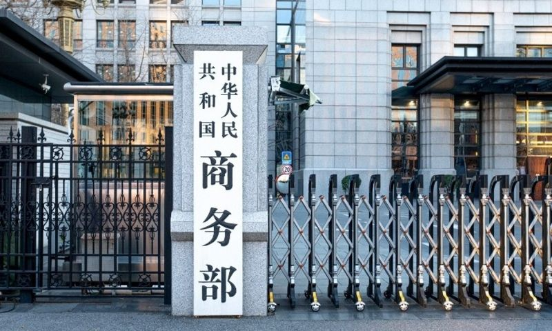
Trung Quốc - Mỹ đạt đồng thuận về thuế quan sau chuyến thăm của ông Trump 🔗 MOI
Trung Quốc và Mỹ đạt đồng thuận về thuế quan, nhất trí thành lập Hội đồng Thương mại cùng Hội đồng Đầu tư sau hội đàm giữa ông Tập Cận Bình và ông Donald Trump. “Dưới sự định hướng của những đồng thuậ
Mỹ, Trung Quốc thông tin chi tiết kết quả thượng đỉnh Donald Trump - Tập Cận Bình 🔗 MOI
(PLO)- Nhà Trắng cho biết Trung Quốc dự kiến mua ít nhất 17 tỉ USD sản phẩm nông nghiệp của Mỹ mỗi năm, trong khi đó Bắc Kinh cho hay cả hai bên đều hướng tới việc thúc đẩy thương mại hai chiều thôn
Tin công nghệ tuần qua: Netflix bị kiện, Trung Quốc ra mắt robot chở người 🔗 MOI
Những thông tin công nghệ nổi bật trong tuần (11 – 17/5) là Netflix đối mặt vụ kiện thu thập dữ liệu người dùng trái phép, công ty của Trung Quốc ra mắt robot chở người có thể ‘biến hình’. FPT thử ngh
Chiến sự Trung Đông ngày 80: Ông Netanyahu và ông Trump điện đàm, bàn tấn công Iran; Tehran nhắn Mỹ hoặc chấp nhận điều kiện hoặc đầu hàng 🔗 MOI
(PLO)- Ông Trump cảnh báo Iran thời gian không còn nhiều; Tehran nhắn Mỹ hoặc chấp nhận điều kiện hoặc "đầu hàng trước tên lửa Iran"; Ông Netanyahu và ông Trump bàn khả năng nối lại chiến sự với Iran.
Giá vàng hôm nay 18/5/2026 rơi mạnh nhất nhiều tuần, cảnh báo đà giảm chưa dừng 🔗 MOI
Giá vàng thế giới hôm nay 18/5/2026 Tuần trước, giá vàng thế giới giao ngay mở đầu tuần ở mức 4.687 USD/ounce và có thời điểm tăng lên trên 4.768 USD/ounce nhờ nhu cầu trú ẩn an toàn. Tuy nhiên, đà tă
'Điểm mù' lãi suất margin chứng khoán 🔗 MOI
Có hai phương pháp chia số ngày trong một năm khi tính lãi suất margin (giao dịch ký quỹ) - Ảnh: HỮU HẠNH Nhiều nhà đầu tư gọi đây là "điểm mù" vì ít người để ý, phụ thuộc việc quy đổi số ngày trong m
Nhận điện thoại 'nhân viên ngân hàng' sau khi giải quyết kẹt thẻ ATM, ông cụ mất 18 triệu đồng 🔗 MOI
Sau khi trình báo việc bị kẹt thẻ ATM tại ngân hàng, ông P.V.H. nhận được cuộc điện thoại lạ và bị lừa mất 18 triệu đồng - Ảnh minh họa Ngày 17-5, ông P.V.H. (70 tuổi, trú xã Phù Cát, Gia Lai) phản án
Ông Trump nói Iran 'sắp hết thời gian', Nga cảnh báo Mỹ - Israel 🔗 MOI
Theo Al Jazeera, Tổng thống Mỹ Donald Trump ngày 17/5 đã yêu cầu Iran nhanh chóng đưa ra một đề xuất tốt hơn, trong bối cảnh các cuộc đàm phán gián tiếp giữa hai bên đang bị đình trệ. "Thời gian của I
Tổng thống Mỹ Trump cảnh báo Iran phải hành động nhanh chóng 🔗 MOI
Hôm Chủ nhật (17/5), Tổng thống Mỹ Donald Trump đã phát đi thông điệp cứng rắn nhằm gây sức ép lên Iran giữa lúc các cuộc đàm phán hòa bình và hạt nhân giữa hai bên tiếp tục đình trệ. Trong bài đăng t
Kinh tế tư nhân cần chính sách ổn định và niềm tin đầu tư 🔗 MOI
Sự chuyển dịch đó cũng cho thấy kinh tế Việt Nam đang bước sang một giai đoạn cải cách mới, nơi thành công không chỉ được đo bằng số lượng thủ tục cắt giảm, mà còn bằng sức khỏe thực chất của doanh ng

Phát huy vai trò chủ đạo của kinh tế nhà nước trong kỷ nguyên mới 🔗 MOI
Kinh tế Thay vì dựa trên quy mô sở hữu, bài viết phân tích vai trò của kinh tế nhà nước trong nền kinh tế Việt Nam theo cách tiếp cận chức năng: ổn định kinh tế vĩ mô, định hướng phát triển và thiết l
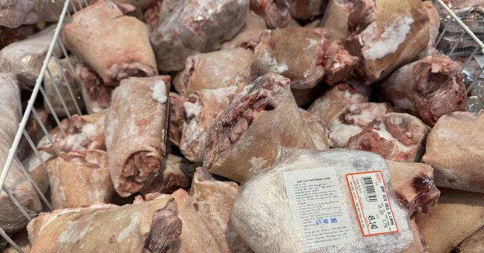
Chỉ 4 tháng, doanh nghiệp rót gần 930 triệu USD nhập khẩu thịt và phụ phẩm 🔗 MOI
Theo thống kê sơ bộ của Cục Hải quan, tháng 4, kim ngạch nhập khẩu nhóm mặt hàng thịt và các sản phẩm từ thịt ước đạt 276 triệu USD, chỉ tăng nhẹ 1,3% so với tháng liền kề trước đó. Tuy nhiên, tính ch
Quốc gia nào có giá điện sinh hoạt cao nhất Đông Nam Á? 🔗 MOI
1. Quốc gia nào có giá điện cao nhất Đông Nam Á? Indonesia 0% Thái Lan 0% Singapore 0% Việt Nam 0% Chính xác Theo công bố tại trang Global Petrol Prices về giá điện của các quốc gia và vùng lãnh thổ,
Trông như ô tô thực chất là xe đạp điện, chạy tới hơn 320km/sạc 🔗 MOI
Sau giai đoạn ngừng hoạt động rồi tái khởi động, Organic Transit tiếp tục phát triển dòng xe này lên phiên bản Elf 3.0 với hàng loạt nâng cấp - Ảnh: Organic Transit Sau hơn một thập kỷ kể từ lần đầu r
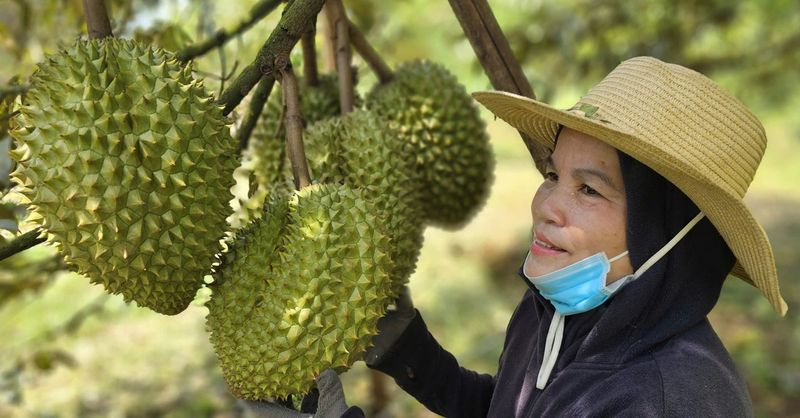
Xuất khẩu sầu riêng vào Mỹ, Hàn… tăng mạnh nhưng vẫn còn nhiều nỗi lo 🔗 MOI
Giá sầu riêng thời gian qua thường xuyên trồi sụt - Ảnh: N.TRÍ Theo thông tin từ Bộ Nông nghiệp và Môi trường, trong quý 1-2026, xuất khẩu sầu riêng của Việt Nam đạt khoảng 221,7 triệu USD, tăng 230%
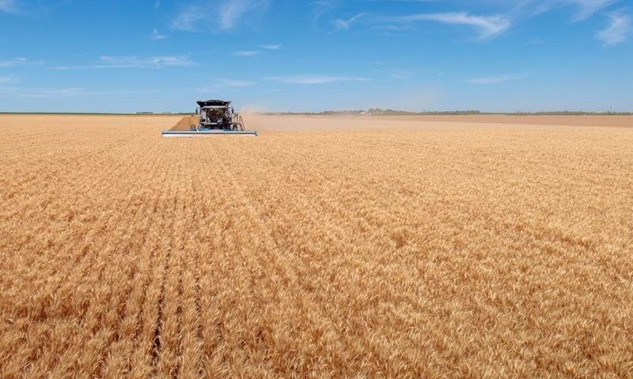
Sắp diễn ra Hội thảo tìm hiểu thị trường Nam Mỹ 🔗 MOI
Hội thảo tìm hiểu thị trường Nam Mỹ với trọng tâm là Argentina và Chile, nhằm cập nhật xu hướng thị trường, phân tích cơ hội xuất khẩu và tìm kiếm các giải pháp cho doanh nghiệp giao thương. Ảnh minh
Giá vàng nhẫn trơn, vàng miếng sáng 18/5 🔗 MOI
TIN MỚI Trên thị trường quốc tế, giá vàng giao ngay ghi nhận đầu phiên sáng ở mức 4.540 USD/ounce, tăng nhẹ 0,02% so với mức đóng cửa gần nhất. Trước đó, giá vàng đã giảm hơn 3,7% trong tuần trước. Gi

Dự thảo văn kiện Đại hội XIV của Đảng: Nhìn từ lăng kính kinh tế - tài chính 🔗 MOI
Thời sự Dự thảo Báo cáo chính trị trình Đại hội XIV của Đảng đặt mục tiêu tăng trưởng GDP giai đoạn 2026–2030 đạt từ 10%/năm trở lên với định hướng rõ ràng chuyển đổi mô hình tăng trưởng dựa vào khoa
Công an Đồng Nai khởi tố 4 người ném ‘bom xăng’ vào nhà người khác trong đêm 🔗 MOI
Thừa ủy quyền của thủ trưởng Cơ quan cảnh sát điều tra Công an TP Đồng Nai, Công an phường Trị An tống đạt quyết định khởi tố vụ án, khởi tố bị can và lệnh bắt bị can để tạm giam đối với ba thanh
Thượng đỉnh Mỹ - Trung và lựa chọn chiến lược của Việt Nam 🔗 MOI
Chủ tịch nước Trung Quốc Tập Cận Bình và Tổng thống Mỹ Donald Trump thăm vườn Trung Nam Hải (Bắc Kinh) vào hôm 15-5 - Ảnh: REUTERS Cuộc họp thượng đỉnh giữa Tổng thống Mỹ Donald Trump và Chủ tịch Trun

Đổi mới mô hình tăng trưởng gắn với tái cơ cấu nền kinh tế trong giai đoạn mới 🔗 MOI
Pháp luật Triển khai Nghị quyết số 07-NQ/TW ngày 18/11/2016 của Bộ Chính trị về chủ trương, giải pháp cơ cấu lại ngân sách nhà nước, quản lý nợ công, việc cơ cấu lại ngân sách nhà nước, quản lý nợ côn

Tiếp nhận phản ánh kiến nghị của doanh nghiệp 🔗 MOI
HỌ VÀ TÊN * EMAIL * SỐ ĐIỆN THOẠI * ĐỊA CHỈ * TIÊU ĐỀ * FILES ĐÍNH KÈM NỘI DUNG * RadEditor - HTML WYSIWYG Editor. MS Word-like content editing experience thanks to a rich set of formatting tools, dro
Lãi suất ngân hàng ngày 18/5: Lãi suất tiền gửi online nhích tăng trở lại 🔗 MOI
Facebook Twitter Lưu bài viết Bản in Copy link Trong tuần qua, thị trường tiền gửi ghi nhận những tín hiệu đảo chiều cục bộ khi một số ngân hàng thương mại điều chỉnh tăng lãi suất huy động, chủ yếu t
Hai tiêm kích va chạm tại triển lãm hàng không Mỹ 🔗 MOI
Facebook Twitter Lưu bài viết Bản in Copy link Truyền thông Mỹ đưa tin hai máy bay tiêm kích đã va chạm trên không trong một sự kiện trình diễn ở bang Idaho vào ngày 17/5. Các phi công đã nhảy dù an t
Doanh nghiệp phải tái chế bao bì, pin, đồ điện tử 🔗 MOI
Theo Nghị định 110/2026 (quy định chi tiết thi hành một số điều của Luật Bảo vệ môi trường), từ ngày 25-5, doanh nghiệp (DN) sản xuất, nhập khẩu trong nhiều nhóm ngành - từ bao bì giấy, nhựa, kim loại
VIDEO: 2 máy bay tác chiến Mỹ va nhau dính chùm trên không, rơi tự do 🔗 MOI
(PLO)- Hai máy bay tác chiến EA-18G của Hải quân Mỹ va vào nhau khi biểu diễn tại bang Idaho, dính vào nhau rồi rơi tự do, khiến chương trình biểu diễn hàng không bị huỷ. Hai máy bay tác chiến điện tử
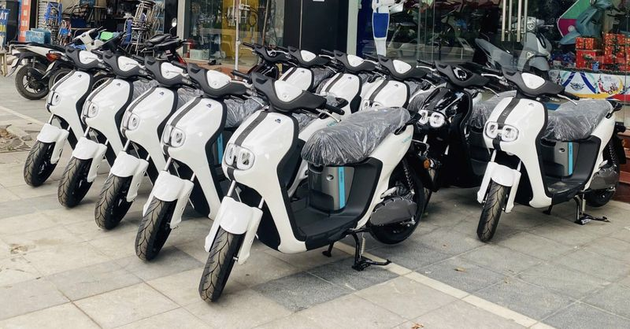
Xe máy điện bất ngờ hạ nhiệt, mức giảm cao nhất lên đến 15 triệu đồng 🔗 MOI
Theo ghi nhận của PV VietNamNet, thị trường xe máy điện đang có dấu hiệu chững lại rõ rệt khi Hà Nội chưa cấm xe máy xăng cá nhân đi vào vùng phát thải thấp từ 1/7, chỉ hạn chế vào cuối tuần. Nhiều đạ
Sạt lở nham nhở, mái kè bỏ dở tại cột điện thuộc dự án 500kV Lào Cai - Vĩnh Yên 🔗 MOI
Từ đầu tháng 5 đến nay, tại vị trí cột 305 thuộc Dự án đường dây 500kV Lào Cai - Vĩnh Yên (thôn 1 Làng Cả, xã Đoan Hùng, tỉnh Phú Thọ) xuất hiện tình trạng sạt lở taluy, đất đá trôi xuống bên dưới. Kh
Iran tuyên bố “10 điều kiện” là lằn ranh đỏ trong đàm phán với Mỹ 🔗 MOI
Chào mừng quý độc giả và thính giả đến với Bản tin Thế giới - chuyên mục podcast thời sự quốc tế hàng ngày trên Báo Điện tử VietnamPlus. Tại đây, chúng tôi cập nhật nhanh nhất những diễn biến nổi bật

Khơi thông các động lực tăng trưởng kinh tế Việt Nam 🔗 MOI
Pháp luật Nhờ sự phối hợp đồng bộ của chính sách tài khóa và tiền tệ trong việc thúc đẩy cầu trong nước, kinh tế Việt Nam năm 2025 phục hồi mạnh, với tăng trưởng vượt mục tiêu đề ra. Về ổn định kinh t
Giật dây chuyền vàng xong tên cướp quay lại đe doạ nạn nhân đưa nốt mặt dây 🔗 MOI
Ngày 17/5, Cơ quan Cảnh sát Điều tra Công an tỉnh Gia Lai đã tạm giữ hình sự Nguyễn Ngọc Chúc (SN 2001, trú tổ 10, phường Thống Nhất, tỉnh Gia Lai) để điều tra về hành vi “ Cướp tài sản ”. Theo thông
Thanh niên 6 lần cướp giật dây chuyền, kiềng vàng tại Gia Lai ra đầu thú 🔗 MOI
Nguyễn Văn Lợi sau khi được cơ quan công an vận động ra đầu thú - Ảnh: Công an tỉnh Gia Lai Ngày 17-5, Công an tỉnh Gia Lai cho hay Phòng Cảnh sát hình sự vừa vận động nghi phạm truy nã đặc biệt nguy
Hạ thủy thành công tàu chở dầu 21.800 tấn do doanh nghiệp Việt đóng 🔗 MOI
Tập đoàn Đại Dũng hạ thủy con tàu chở dầu/hóa chất H1033 với tải trọng 21.800 tấn - Ảnh: C.T. Đại diện Tập đoàn Đại Dũng cho rằng con tàu H1033 do đơn vị này đóng không chỉ là một phương tiện vận tải
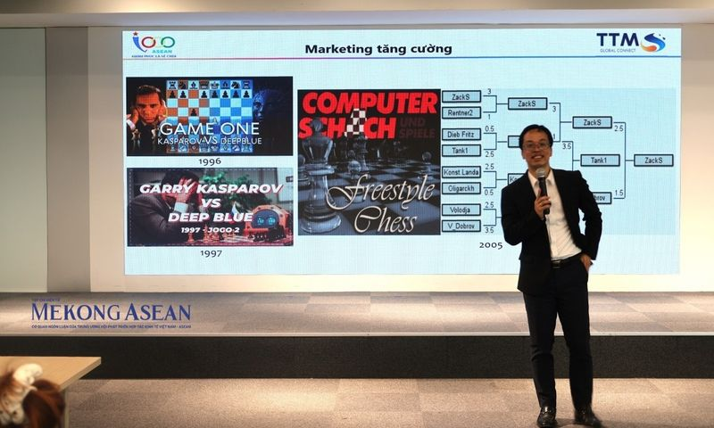
Hội VASEAN tổ chức chương trình chia sẻ giải pháp 'Marketing 5.0' cho doanh nghiệp 🔗 MOI
Hội VASEAN tổ chức chương trình chia sẻ giải pháp Marketing 5.0 nhằm hỗ trợ doanh nghiệp ứng dụng dữ liệu, AI và công nghệ số để mở rộng khách hàng, nâng cao hiệu quả marketing và thúc đẩy xuất khẩu.
Năng lượng & Khoáng sản 🔗 MOI
Ngày 9/4, Ủy ban Thường vụ Quốc hội đã cho ý kiến về dự thảo Nghị quyết của Quốc hội về việc ban hành một số quy định về thuế bảo vệ môi trường, thuế giá trị gia tăng, thuế tiêu thụ đặc biệt đối v
Giá vàng hôm nay 18-5: Bật tăng trở lại sau cú lao dốc mạnh cuối tuần 🔗 MOI
Mở cửa tuần giao dịch mới, sáng 18-5 (giờ Việt Nam), giá vàng hôm nay trên thị trường quốc tế đang ở mức 4.551 USD/ounce, tăng 14 USD/ounce so với cuối tuần trước. Giá vàng phục hồi sau một tuần rớt m
Giá vàng còn cơ hội trở lại vùng đỉnh trong năm nay? 🔗 MOI
TIN MỚI Các yếu tố từng thúc đẩy giá vàng liên tục lập kỷ lục trong năm ngoái vẫn chưa biến mất, dù thị trường đang xuất hiện thêm nhiều biến số mới từ địa chính trị và lạm phát, theo ông Shaokai Fan,
Ngư lôi Poseidon: Thách thức mới dưới đáy đại dương đối với Mỹ 🔗 MOI
Poseidon được mô tả là ngư lôi tự hành chạy bằng năng lượng hạt nhân, có tầm hoạt động gần như không giới hạn, khả năng lặn sâu và mang đầu đạn hạt nhân nhằm vào các mục tiêu chiến lược ven biển. Giới
[Video] Iran cảnh báo thu phí cáp ngầm internet xuyên biển 🔗 MOI
Theo truyền thông quốc tế, Iran đề xuất thu phí với các tập đoàn công nghệ lớn sử dụng cáp ngầm dưới biển và có thể kiểm soát việc vận hành, bảo trì. Giới quan sát cho rằng kế hoạch này nếu triển khai
Nợ xấu nhiều ngân hàng tăng mạnh: Hai nhà băng có số dư nợ xấu vượt 40.000 tỷ đồng 🔗 MOI
TIN MỚI Theo số liệu từ báo cáo tài chính của 27 ngân hàng trên sàn chứng khoán, tổng nợ xấu tính đến ngày 31/3/2026 đạt 292.160 tỷ đồng, tăng thêm 28.065 tỷ đồng so với cuối năm 2025, tương ứng tăng
Lại Lý Huynh vào 'bảng tử thần', chạm trán kỳ vương Trung Quốc 🔗 MOI
Lại Lý Huynh chuẩn bị đối đầu nhà vô địch cờ tướng Trung Quốc - Ảnh: YCWB Lại Lý Huynh cùng bảng với kỳ vương Trung Quốc Hơn 2 tuần trước, ban tổ chức Xuân Khâu Đại Diệp Bôi gây bất ngờ làng cờ tướng
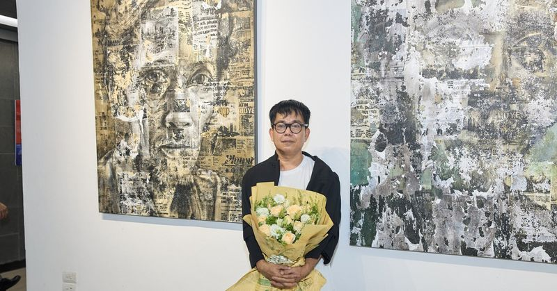
Hai tuần đắm đuối vẽ chân dung Bùi Xuân Phái của họa sĩ Thái Lan Vichit Nongnual 🔗 MOI
Họa sĩ Vichit Nongnual và tác phẩm ông vẽ Bùi Xuân Phái - Ảnh: Đông A Gallery Hai bức chân dung Bùi Xuân Phái với kỹ thuật vẽ và in chồng nhiều lớp hình độc đáo của họa sĩ Vichit Nongnual đ
Tin tức thế giới 17-5: Ông Trump đăng ảnh cảnh báo Iran; Châu Âu gặp khó vì giá vũ khí tăng cao 🔗 MOI
Tổng thống Mỹ đăng hình ảnh cảnh báo "cơn bão" sắp đến - Ảnh: Truth Social Ông Trump đăng ảnh về "khoảng lặng trước cơn bão" với Iran Tổng thống Mỹ Donald Trump ngày 16-5 đăng một hình ảnh trên nền tả
Siêu tàu sân bay USS Gerald R. Ford trở về Mỹ sau 326 ngày làm nhiệm vụ 🔗 MOI
Tàu sân bay USS Gerald R. Ford tiến về Căn cứ Hải quân Norfolk ngày 16-5 - Ảnh: AP Theo Hãng tin AFP, tàu sân bay USS Gerald R. Ford cùng hai tàu khu trục hộ tống là USS Mahan và USS Bainbridge đã cập

Kiến tạo không gian phát triển mới cho kinh tế tập thể 🔗 MOI
Pháp luật Trong giai đoạn 2021-2025, dựa vào mục tiêu phát triển, điều kiện ngân sách và nhu cầu hỗ trợ, năng lực của các hợp tác xã, Thủ tướng Chính phủ đã ban hành Chương trình hỗ trợ phát triển kin
Singapore xuất hiện lừa đảo bằng AI mạo danh Thủ tướng 🔗 MOI
Lực lượng Cảnh sát Singapore thu thập được video ghi lại cuộc họp trực tuyến được dàn dựng bằng trí tuệ nhân tạo (AI) để tạo cảm giác như có sự tham gia của Thủ tướng Lawrence Wong. Lực lượng Cảnh sát

Nhìn lại 1 năm thực thi Nghị quyết 68-NQ/TW 🔗 MOI
Doanh nghiệp Sau 1 năm triển khai Nghị quyết số 68-NQ/TW, nhiều doanh nghiệp công nghệ Việt ghi nhận những chuyển biến tích cực từ môi trường kinh doanh, cơ chế hỗ trợ và tư duy điều hành theo hướng k
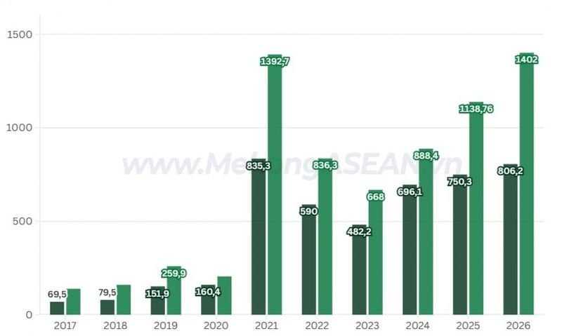
Nhập khẩu hạt điều từ Campuchia 4 tháng đầu năm lập kỷ lục 🔗 MOI
Chỉ trong 4 tháng đầu năm 2026, Việt Nam chi tới 1,4 tỷ USD để nhập khẩu hạt điều từ Campuchia, đây cũng là mức cao nhất trong vòng 10 năm qua. Số liệu từ Cục Hải quan cho biết, lũy kế 4 tháng đầu năm
Tạp chí Kinh tế Sài Gòn 🔗 MOI
Kinh tế Sài Gòn giữ bản quyền nội dung của trang web thesaigontimes.vn. Không sử dụng lại nội dung trên trang này dưới mọi hình thức, trừ khi được Kinh tế Sài Gòn đồng ý bằng văn bản. Trang ngoài sẽ đ
Tạp chí Kinh tế Sài Gòn 🔗 MOI
Kinh tế Sài Gòn giữ bản quyền nội dung của trang web thesaigontimes.vn. Không sử dụng lại nội dung trên trang này dưới mọi hình thức, trừ khi được Kinh tế Sài Gòn đồng ý bằng văn bản. Trang ngoài sẽ đ
Tạp chí Kinh tế Sài Gòn 🔗 MOI
Kinh tế Sài Gòn giữ bản quyền nội dung của trang web thesaigontimes.vn. Không sử dụng lại nội dung trên trang này dưới mọi hình thức, trừ khi được Kinh tế Sài Gòn đồng ý bằng văn bản. Trang ngoài sẽ đ
Tạp chí Kinh tế Sài Gòn 🔗 MOI
Kinh tế Sài Gòn giữ bản quyền nội dung của trang web thesaigontimes.vn. Không sử dụng lại nội dung trên trang này dưới mọi hình thức, trừ khi được Kinh tế Sài Gòn đồng ý bằng văn bản. Trang ngoài sẽ đ
Khoảnh khắc 2 tiêm kích EA-18 của Mỹ rơi xuống đất sau khi va chạm trên không 🔗 MOI
Theo RT, Hải quân Mỹ ngày 17/5 đã xác nhận việc 2 máy bay chiến đấu EA-18 của lực lượng này bị rơi sau khi va chạm với nhau trong một buổi biểu diễn ở căn cứ không quân Mountain Home, bang Idaho. "2 m
LẮNG NGHE NGƯỜI DÂN HIẾN KẾ: Bốn lực đẩy để kinh tế TP HCM bứt tốc 🔗 MOI
Mô hình đó thông qua 4 động lực: hạ tầng, kinh tế số,khu vực tư nhân và nhân lực chất lượng cao. Muốn giữ vững vai trò đầu tàu kinh tế và đạt mục tiêu tăng trưởng 2 con số giai đoạn 2026 - 2030, TP HC
Trung Quốc tức giận với kế hoạch quân sự mới của Nhật Bản 🔗 MOI
Nhật Bản đang triển khai nhiều khí tài tới các đảo phía nam. (Ảnh minh hoạ) Trong bài bình luận đăng ngày 17/5, PLA Daily - cơ quan ngôn luận của quân đội Trung Quốc, cho rằng dù Tokyo khẳng định đang
Tăng nguồn vốn để “hạ nhiệt” lãi suất 🔗 MOI
Khách hàng giao dịch tại một ngân hàng ở TPHCM. Ảnh: MINH HUY Xem xét nới lỏng quy định Theo Ngân hàng Nhà nước Việt Nam (NHNN), đến hết quý 1-2026, tăng trưởng tín dụng đạt hơn 3%, trong khi huy động
Điểm nóng xung đột ngày 18-5: Oman kẹt giữa Mỹ và Iran vì eo biển Hormuz 🔗 MOI
Theo báo The Guardian , Iran đề cập việc phối hợp với Oman để xây dựng cơ chế quản lý lâu dài đối với eo biển Hormuz, trong đó có kế hoạch thu phí tàu thương mại đi qua. Tuy nhiên, phía Oman đến nay c
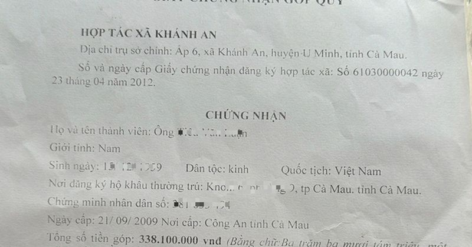
Sắp xử vụ Việt kiều Mỹ kiện đòi hơn 3,4 tỉ đồng tiền lợi nhuận hợp tác xã 🔗 MOI
Sau khi vướng vòng lao lý và phải bàn giao quyền điều hành hợp tác xã do mình sáng lập cho người khác, ngày trở về của ông T .V.L ( 67 tuổi, Việt kiều Mỹ ) rơi vào cuộc chiến pháp lý kéo dài nhiều năm
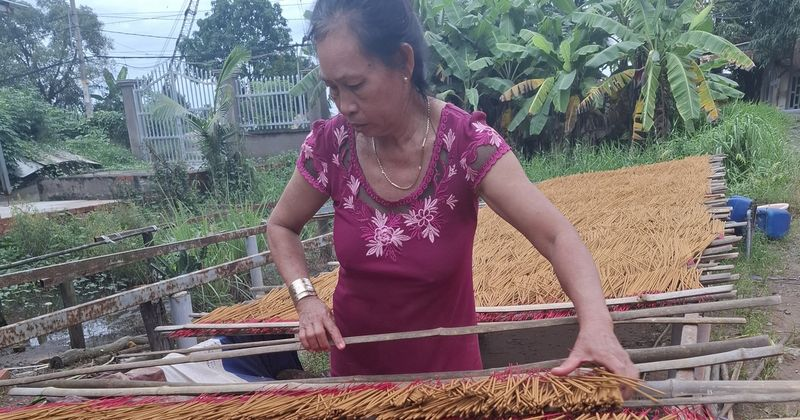
Điện lưới thành phố giúp đổi thay làng nghề se nhang Lê Minh Xuân 🔗 MOI
Tôi đến làng nghề se nhang Lê Minh Xuân vào ngày đầu tháng 4.2026, khi nơi đây rộn ràng tiếng máy se nhang đương vụ giữa năm cho tết sắp tới. Chạy dọc theo tuyến đường nhựa Mai Bá Hương trải dài từ hư
Phiên tòa 'tỷ phú đấu tỷ phú' giữa Musk và Altman 🔗 MOI
Phiên tòa diễn ra từ ngày 28/4 tại tòa án liên bang ở Oakland, California và đã kết thúc phần tranh luận vào 14/5. Bồi thẩm đoàn 9 người bắt đầu thảo luận ngày 18/5 để đưa ra phán quyết OpenAI nên đượ
Wuling Grango đến Việt Nam: Giá dự kiến 499 triệu, to cỡ Xpander, trang bị 'đơn sơ' 🔗 MOI
Wuling Grango được lắp ráp tại Việt Nam - Ảnh: Đại lý Những hình ảnh thực tế của Wuling Grango EV dành cho thị trường Việt Nam vừa được hé lộ tại một sự kiện nội bộ. Theo thông tin từ các tư vấn bán h

Chuyên đề Agribank 🔗 MOI
Trước áp lực thực thi Nghị định số 70/2025/NĐ-CP về hóa đơn điện tử và quản lý thuế, Agribank tổ chức hội nghị tập huấn toàn quốc, thống nhất quy trình hỗ trợ và giới thiệu gói giải pháp số dành riêng
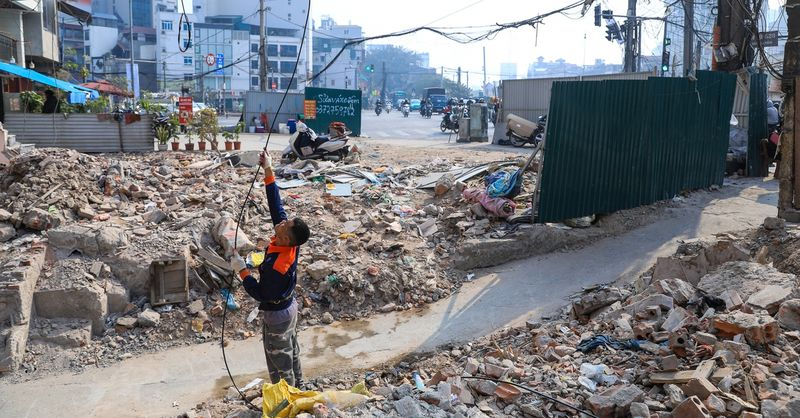
Hà Nội điều chỉnh giao thông nút giao La Thành - Nguyễn Chí Thanh để xây cầu vượt đường vành đai 1 🔗 MOI
Công nhân thi công trên đoạn tuyến đường vành đai 1 - Ảnh: DANH KHANG Sở Xây dựng Hà Nội vừa phát đi thông báo về việc điều chỉnh tổ chức giao thông nút giao La Thành - Nguyễn Chí Thanh để phục vụ thi

TỔNG QUAN TỔNG QUAN KINH TẾ 🔗 MOI
Kinh tế Hoạt động điều hành chính sách tài khóa năm 2025 diễn ra trong bối cảnh tình hình kinh tế trong nước và quốc tế tiếp tục diễn biến phức tạp, căng thẳng thương mại toàn cầu gia tăng, đặc biệt l

Hưởng lợi từ giá phân bón, DPM lãi lớn quý đầu năm 🔗 MOI
Báo sau thuế hơn 410 tỷ đồng trong quý 1/2026, DPM đã hoàn thành tới 60% mục tiêu lợi nhuận năm chỉ sau một quý đầu năm. Ảnh: PVFCCo - Phú Mỹ. Tổng công ty Phân bón và Hóa chất Dầu khí (PVFCCo -
Bộ Công Thương phê duyệt khung giá cho thủy điện năm 2026 🔗 MOI
Bộ Công Thương quy định khung giá phát điện thủy điện năm 2026 từ 0 - 1.110 đồng/kWh, góp phần thúc đẩy minh bạch và ổn định thị trường điện năng Việt Nam. Nhà máy Thủy điện Hòa Bình. Ảnh: Mekong ASEA

Tiếp nhận phản ánh kiến nghị của công dân 🔗 MOI
HỌ VÀ TÊN * EMAIL * SỐ ĐIỆN THOẠI * ĐỊA CHỈ * TIÊU ĐỀ * FILES ĐÍNH KÈM NỘI DUNG * RadEditor - HTML WYSIWYG Editor. MS Word-like content editing experience thanks to a rich set of formatting tools, dro
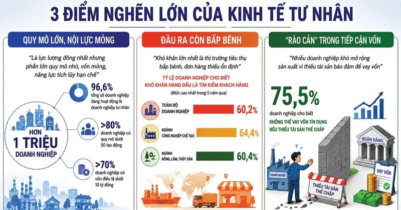
Kinh tế tư nhân trước cơ hội lớn để bứt phá 🔗 MOI
Cơ hội ấy sẽ không thể tự chuyển hóa thành sức mạnh nếu những điểm nghẽn về thể chế, môi trường kinh doanh , tiếp cận các nguồn lực và năng lực nội tại của doanh nghiệp không được tháo gỡ thực chất. Y
Xây dựng nguồn nhân lực khoa học, công nghệ xứng tầm 🔗 MOI
Chuyển động từ thực tiễn Phát triển nguồn nhân lực nói chung, nguồn nhân lực khoa học, công nghệ và đổi mới sáng tạo nói riêng là vấn đề cấp bách, bảo đảm nền kinh tế phát triển bền vững, ổn định, hội
Kênh huy động vốn rầm rộ của nhiều doanh nghiệp 🔗 MOI
TIN MỚI Tuần này, có 50 doanh nghiệp thông báo chốt quyền để trả cổ tức. Trong đó, có 47 công ty trả cổ tức bằng tiền với mức cao nhất là 83% và thấp nhất là 1%, còn lại là trả cổ tức bằng cổ phiếu. 3
Tia hy vọng về đàm phán Nga - Ukraine 🔗 MOI
Những tuần vừa qua ghi nhận nhiều tín hiệu tích cực trong tiến trình hòa bình Nga-Ukraine, dù hai bên vẫn thường xuyên cáo buộc nhau về các đòn không kích vào hạ tầng dân sự, cả Kiev và Moscow đều cho
Ban hành danh mục 15 bộ dữ liệu phục vụ phát triển AI 🔗 MOI
Phó Thủ tướng Hồ Quốc Dũng vừa ký Quyết định số 804/QĐ-TTg ngày 6/5 ban hành danh mục bộ dữ liệu phục vụ phát triển trí tuệ nhân tạo (AI) trong các lĩnh vực thiết yếu. Theo quyết định, danh mục bộ dữ

Ấn phẩm 🔗 MOI
Tạp chí Kinh tế - Tài chính Online. Cơ quan chủ quản: Bộ Tài chính Giấy phép xuất bản số: 107/GP-BVHTTDL ngày 26/8/2025. Tạp chí Kinh tế - Tài chính Online: e-ISSN 3093-3498.

Chính phủ với doanh nghiệp 🔗 MOI
20/03/2026 (Chinhphu.vn) - Chính phủ ban hành Nghị quyết số 11/2026/NQ-CP về chi phí tiền lương Ngân hàng thương mại TNHH một thành viên Xây dựng Việt Nam, Ngân... 04/03/2026 (Chinhphu.vn) - Chính phủ

Tham vấn chính sách 🔗 MOI
15/05/2026 (Chinhphu.vn) - Bộ Tài chính đang dự thảo Nghị định sửa đổi, bổ sung một số điều của Nghị định số 113/2024/NĐ-CP ngày 12/9/2024 của Chính phủ quy... 14/05/2026 (Chinhphu.vn) - Bộ Tài chính
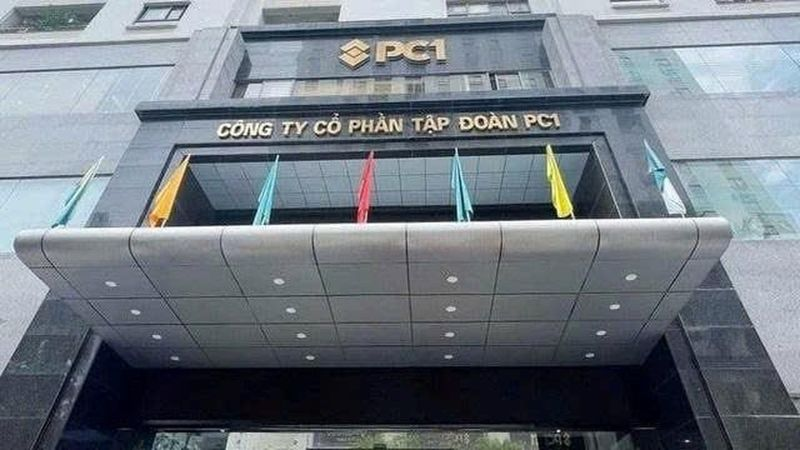
PC1 thông báo khẩn: Ủy quyền cho đội ngũ nhân sự chủ chốt tiếp tục quản trị và vận hành doanh nghiệp 🔗 MOI
PC1 thông báo khẩn: Ủy quyền cho đội ngũ nhân sự chủ chốt tiếp tục quản trị và vận hành doanh nghiệp Theo Mai Chi | 18/05/2026 06:48 AM | Kinh doanh Theo dõi Cafebiz.vn trên PC1 khẳng định hệ thống qu
Bảo vệ dòng chảy năng lượng và thương mại 🔗 MOI
Tại cuộc họp đặc biệt của Hội đồng Kinh tế và Xã hội Liên hợp quốc (ECOSOC) ngày 16/5, giới chức Liên hợp quốc nêu rõ, gián đoạn nguồn cung năng lượng toàn cầu và các hành lang thương mại đang đẩy giá
Từng bước hiện thực hóa mục tiêu làm chủ công nghệ chiến lược 🔗 MOI
Mới đây Thủ tướng Chính phủ đã ban hành quyết định danh mục 10 công nghệ chiến lược và danh mục hai nhóm với 30 sản phẩm công nghệ chiến lược cho thấy quyết tâm và nỗ lực tạo dựng nền tảng công nghệ c
Cô dâu Cà Mau mếu máo vì mất 6 chỉ vàng được tặng, tiết lộ tình hình hiện tại 🔗 MOI
Liên quan đến câu chuyện cô dâu mất 6 chỉ vàng trong ngày cưới, Huỳnh Thùy Mai (quê Cà Mau, chủ nhân của số vàng bị mất) cho hay, cho đến giờ số vàng vẫn chưa được tìm thấy. Cô dâu Cà Mau mất 6 chỉ và
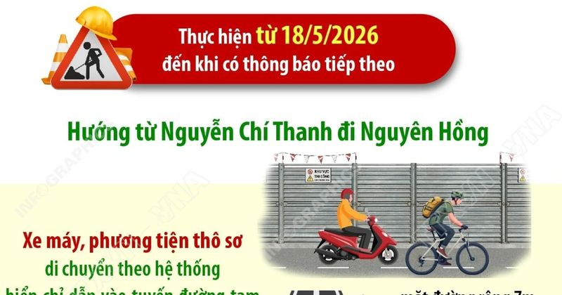
Hà Nội điều chỉnh giao thông nút giao La Thành-Nguyễn Chí Thanh từ 18/5 🔗 MOI
Facebook Twitter Lưu bài viết Bản in Copy link Sở Xây dựng Hà Nội vừa ban hành Thông báo số 751/TB-SXD về việc điều chỉnh phương án tổ chức giao thông tại khu vực nút giao La Thành-Nguyễn Chí Thanh nh
Chủ tiệm vàng nức tiếng Hà thành dạy 8 con thành tài, 4 người là giáo sư 🔗 MOI
Bài 1: Giáo sư 89 tuổi ở Hà Nội làm việc 12 tiếng/ngày, thảo luận tiếng Anh với ChatGPT Sinh ra trong một gia đình giàu có, trọng đạo học, GS.TS Phạm Huy Dũng cùng các anh chị em đều được cha mẹ nuôi
Thêm căng thẳng giữa UAE và Iran, vùng Vịnh bất an? 🔗 MOI
Theo The Telegraph , một số quan chức trong chính quyền Tổng thống Donald Trump được cho là khuyến khích Các Tiểu vương quốc Ả Rập thống nhất (UAE) tham chiến sâu hơn, thậm chí chiếm một hòn đảo chiến
Lối đi riêng của điện mặt trời Nhật Bản 🔗 MOI
Đó là bởi quan niệm cho rằng nguồn năng lượng này có chi phí cao và không ổn định. Hơn nữa, chính phủ nước này còn thắt chặt quản lý các dự án điện mặt trời quy mô lớn và sẽ cắt trợ cấp từ tháng 4-202
Nhóm ném bom xăng vào nhà đối thủ bị bắt 🔗 MOI
Ngày 17/5, Đạt và đồng phạm bị Công an phường Trị An khởi tố về hành vi Cố ý làm hư hỏng tài sản. Trong đó, Võ Trung Kiên (20 tuổi) được tại ngoại, còn lại bị tạm giam. Bốn thanh niên ném bom xăng vào
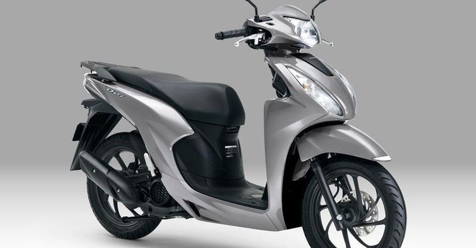
'Song sinh' của Honda Vision có bản mới, 1 lít xăng chạy được hơn 55km 🔗 MOI
Honda tiếp tục duy trì định hướng của dòng Dio là một mẫu xe tay ga tối giản, tập trung vào hiệu quả sử dụng, dễ điều khiển và tối ưu chi phí vận hành - Ảnh: Honda Honda chính thức bổ sung phiên bản n
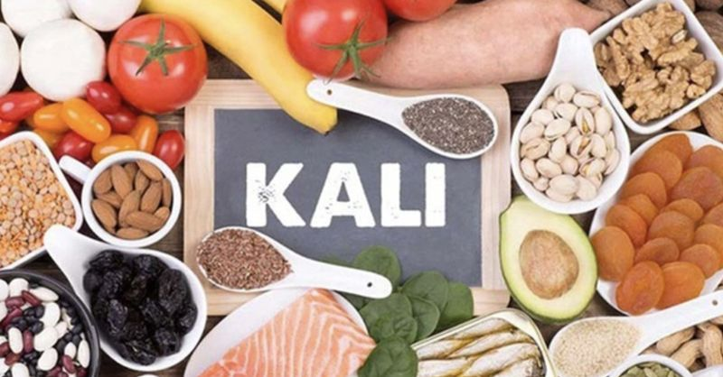
Ai cần thận trọng với thực phẩm giàu kali? 🔗 MOI
Kali là vi chất quan trọng với sức khỏe, nhưng chỉ phát huy hiệu quả khi được sử dụng đúng cách - Ảnh minh họa Những ai cần thận trọng với thực phẩm giàu kali? Theo bác sĩ Ngô Quỳnh Trang, Bệnh viện B
Kim Tử Long sẽ vào vai Lê Lợi 🔗 MOI
Nghệ sĩ Kim Tử Long (phải) và học trò cưng Lê Hậu - Ảnh: LINH ĐOAN Kim Tử Long xem Lê Hậu là học trò, họ thường xuất hiện chung trong nhiều chương trình và các vở cải lương do Kim Tử Long thực hiện. T

Trẻ sinh ra di truyền giang mai từ mẹ có điều trị được không? 🔗 MOI
Mẹ ôm chặt hai con nép sát mép sân ga tránh tàu hàng, 5 người thoát nạn 🔗 MOI
Xác minh clip hai cô gái bị nam thanh niên đuổi đánh trong đêm ở Hà Nội 🔗 MOI
Nhà máy điện hạt nhân của UAE bị drone đánh trúng 🔗 MOI
Nhà máy điện hạt nhân Barakah của UAE vừa bị drone tấn công ngày 17-5 - Ảnh: AP Theo Hãng tin Reuters, ngày 17-5, giới chức Các Tiểu vương quốc Ả Rập thống nhất (UAE) cho biết một máy phát điện tại Nh
Lộ cát sê Dương Dương cho vai Triển Chiêu trong Vũ Lâm Linh 🔗 MOI
Dương Dương thủ vai Triển Chiêu trong Vũ Lâm Linh - Ảnh: Youku Bộ phim võ hiệp Vũ Lâm Linh do diễn viên Dương Dương đóng cùng Chương Nhược Nam nhận nhiều phản hồi tích cực ngay sau khi lên sóng. Theo
HLV Hoàng Anh Gia Lai phản ứng gay gắt với trọng tài 🔗 MOI
HLV Lê Quang Trãi họp báo - Ảnh: N.K Tối 17-5, CLB Hoàng Anh Gia Lai đã thua Hồng Lĩnh Hà Tĩnh 0-2 trên sân Pleiku ở vòng 23 V-League 2025-2026. Trong trận, vào giờ nghỉ giữa hai hiệp, HLV Lê Quang Tr
Thầy hiệu trưởng nhận đỡ đầu bé trai nghi bị cha và mẹ kế bạo hành 🔗 MOI
Thầy Hoàng Văn Trung, Hiệu trưởng Trường tiểu học Đại Thành, Nghệ An, nhận đỡ đầu em T. - Ảnh: TÂM PHẠM Chiều 17-5, căn phòng điều trị tại Trung tâm Y tế Tân Kỳ, Nghệ An đón nhiều người đến thăm em N.

Kiểm soát lạm phát trước những "biến số" cuối năm 🔗 MOI
Tài chính Tại Nghị quyết số 86/NQ-CP ngày 4/11/2025 về triển khai nhiệm vụ trọng tâm những tháng cuối năm 2025, Chính phủ tiếp tục yêu cầu về kiểm soát lạm phát, giữ vững ổn định kinh tế vĩ mô. Trong
Vụ nhóm nam nữ đi Lexus hành hung hai cô gái: Nguyên nhân từ câu hỏi trong thang máy? 🔗 MOI
Hai bàn thắng mang về chức vô địch V-League cho Công An Hà Nội 🔗 MOI
Hai bàn thắng mang về chức vô địch cho Công An Hà Nội - Video: FPT PLAY Tối 17-5, CLB Công An Hà Nội chạm trán các cầu thủ Thanh Hóa tại vòng 15 LPBank V-League 1 2025-2026. Cuộc đối đầu trên sân Hàng
Tăng trưởng hai con số 🔗 MOI
Khai mạc Cuộc thi Tài năng diễn viên cải lương toàn quốc 2026 🔗 MOI
Văn nghệ chào mừng cuộc thi Tài năng diễn viên cải lương toàn quốc 2026 - Ảnh: LINH ĐOAN Đến dự buổi khai mạc Cuộc thi Tài năng diễn viên cải lương toàn quốc 2026 có Thứ trưởng Bộ Văn hóa, Thể thao và
Tin tức sáng 18-5: Tiêu thụ điện lập kỷ lục nhiều ngày, dự báo còn tăng, nguy cơ El Nino từ tháng 6 🔗 MOI
Tiêu thụ điện đã tăng mạnh trong những ngày nắng nóng vừa qua - Ảnh minh họa Tiêu thụ điện liên tục lập kỷ lục nhiều ngày, dự báo tiếp tục tăng cao Thông tin từ Công ty TNHH MTV Vận hành hệ thống điện
Lịch trực tiếp Giải bóng chuyền Cúp VTV9 - Bình Điền ngày 18-5 🔗 MOI
Lịch trực tiếp Giải bóng chuyền Cúp VTV9 - Bình Điền 2026 ngày 18-5 - Đồ họa: AN BÌNH Lúc 14h là trận đấu giữa Giang Tô (Trung Quốc) và VietinBank. Đây chỉ còn là trận đấu thủ tục ở bảng A Giải bóng c
Anh triển khai hệ thống chống drone chi phí thấp tại Trung Đông 🔗 MOI
Máy bay chiến đấu Typhoon của Không quân Hoàng gia Anh - Ảnh: REUTERS “Hệ thống vũ khí hủy diệt chính xác cao cấp mới (APKWS) sẽ được trang bị cho các máy bay chiến đấu Typhoon của Không quân Hoàng gi
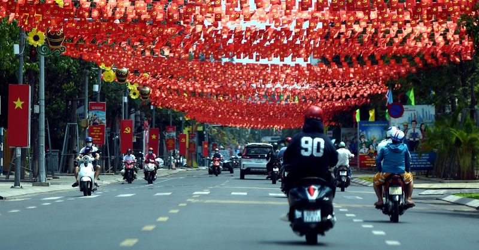
Đồng Nai làm lễ lên thành phố, học sinh ở 10 phường được nghỉ học 🔗 MOI
Văn bản thông báo 85 phường xã phải tổ chức cho học sinh đi học trong ngày 18-5 - Ảnh: H.M Tối 17-5, Sở Giáo dục và Đào tạo thành phố Đồng Nai đã phát đi văn bản gửi phường xã thông báo điều chỉnh nội

Huy động tài chính xanh hướng tới mục tiêu phát triển bền vững 🔗 MOI
Pháp luật Chuyển đổi năng lượng xanh đã trở thành xu thế toàn cầu mang tính bắt buộc, gắn liền với mục tiêu Net Zero và yêu cầu cạnh tranh trong chuỗi cung ứng quốc tế. Trong bối cảnh đó, doanh nghiệp

Tạp chí Kinh tế Tài chính kỳ 2 tháng 4/2026 🔗 MOI

Góc chuyên gia & nhà quản lý 🔗 MOI
Trí tuệ nhân tạo (AI) đang thay đổi cách ngân hàng vận hành, từ phát hiện gian lận, quản trị rủi ro đến chăm sóc khách hàng. Tuy nhiên, theo chuyên gia của HSBC, trong lĩnh vực tài chính - ngân hàng,

Bảo vệ nhà đầu tư trước “cơn sốt” tài sản mã hóa 🔗 MOI
Chứng khoán Trong bối cảnh Việt Nam đang từng bước xây dựng khung pháp lý và chuẩn bị thí điểm thị trường tài sản mã hóa theo Nghị quyết số 05/2025/NQ-CP của Chính phủ, bài toán về an toàn hệ thống, m

Kỷ niệm 51 năm Ngày Giải phóng miền Nam, thống nhất đất nước: Tự chủ chiến lược, kiến tạo thịnh vượng 🔗 MOI
Kinh tế Trong bối cảnh cạnh tranh thu hút đầu tư công nghệ ngày càng quyết liệt, Việt Nam đang chủ động mở cánh cửa ra thế giới để đón các “đại bàng công nghệ”, coi đây là động lực quan trọng để chuyể
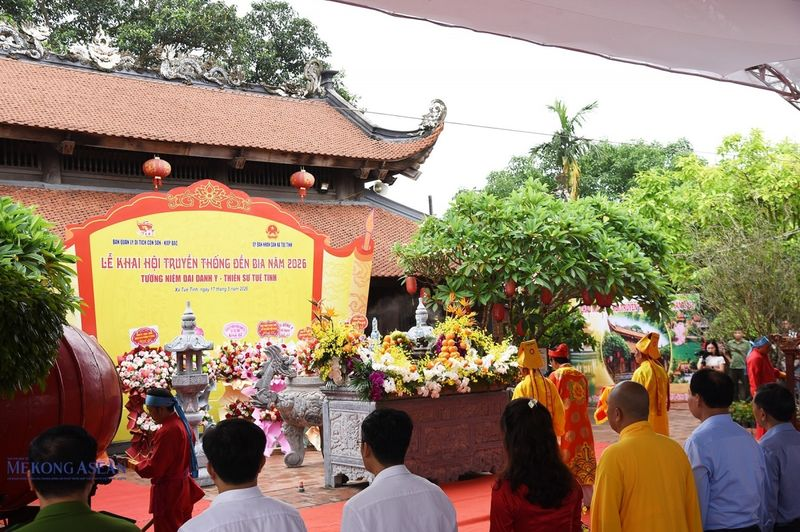
Khai hội truyền thống đền Bia, tưởng niệm đại danh y, thiền sư Tuệ Tĩnh 🔗 MOI
Lễ khai hội truyền thống đền Bia năm 2026, tưởng niệm Đại danh y, Thiền sư Tuệ Tĩnh vừa được Ban Quản lý di tích Côn Sơn - Kiếp Bạc và xã Tuệ Tĩnh trang trọng tổ chức sáng 17/5 (1/4 âm lịch), tại di t
Loạt doanh nghiệp chốt quyền trả cổ tức, cao nhất hơn 80% 🔗 MOI
Trong tuần này (18-22/05/2026), hàng loạt doanh nghiệp trên sàn chứng khoán sẽ chốt danh sách cổ đông trả cổ tức tiền mặt, trong đó tỷ lệ cao nhất lên tới 83,6%. Nhựa Bình Minh có truyền thống trả cổ

Nước CHXHCN Việt Nam 🔗 MOI
© Cổng Thông tin điện tử Chính phủ Tổng Giám đốc: Nguyễn Hồng Sâm Trụ sở: 16 Lê Hồng Phong - Ba Đình - Hà Nội. Điện thoại: Văn phòng: 080 43162; Fax: 080.48924 Email: thongtinchinhphu@chinhphu.vn Bản
Lê Quang Liêm xuất sắc đoạt vé tham dự Cúp thể thao điện tử thế giới 🔗 MOI
Lê Quang Liêm khẳng định tài năng Hôm nay (giờ Việt Nam), Lê Quang Liêm hoàn thành thi đấu tại giải DreamHack Atlanta là giải đấu tuyển chọn 4 kỳ thủ có thứ hạng tốt nhất giành quyền tham dự esport s
Nỗ lực làm tốt nhiệm vụ Bác giao 🔗 MOI
Đột phá tư duy, kiến tạo không gian phát triển mới Hiểu rõ lời dạy của Bác, “kiểu mẫu” nghĩa là đi đầu, thời gian qua, các cấp ủy đảng, chính quyền tỉnh Thanh Hóa luôn phấn đấu học hỏi, mạnh dạn đổi m
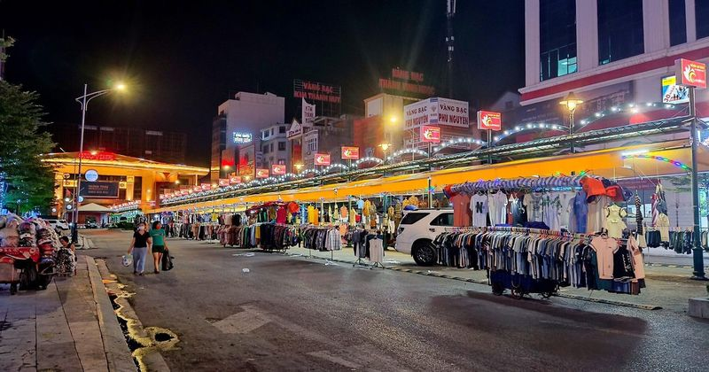
Phố đêm 'chết yểu' 🔗 MOI
Sớm nở tối tàn Tháng 4.2022, phố đi bộ tại P.Trường Vinh (Nghệ An) được vận hành thử nghiệm và chính thức khai trương vào tháng 5.2023 với 3 tuyến phố: Hồ Tùng Mậu, Nguyễn Văn Cừ, Nguyễn Tài. Phố đi b
137 trường hợp được thông báo giới tính thai nhi 🔗 MOI
Theo Thông tư 11/2026, các bệnh được thông báo, tiết lộ giới tính thai nhi để phục vụ chẩn đoán và điều trị (theo quy định chi tiết tại khoản 3 điều 6 luật Dân số) gồm 137 bệnh, hội chứng; trong đó có
Thông tin bất ngờ vụ hai cô gái bị đuổi đánh trong đêm ở Hà Nội 🔗 MOI
Chiều tối 17/5, trao đổi với PV VietNamNet, lãnh đạo UBND phường Xuân Đỉnh (Hà Nội) cho biết Công an phường đã vào cuộc xác minh ngay sau khi tiếp nhận thông tin phản ánh về vụ việc hai cô gái bị đuổi
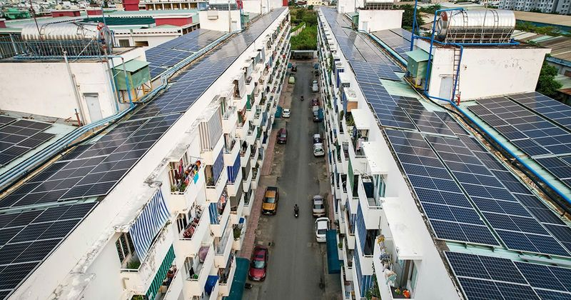
Quyết liệt thắp sáng hàng triệu mái nhà 🔗 MOI
Hàng ngàn MW điện mặt trời góp phần "thắp sáng" nền kinh tế Bộ Công thương vừa ban hành kế hoạch thực hiện Chỉ thị số 10 của Chính phủ về tăng cường tiết kiệm điện và phát triển điện mặt trời mái nhà
Mỹ nhất quyết không nhượng bộ, đưa ra yêu cầu 5 điểm với Iran 🔗 MOI
(Ảnh: Reuters) Theo hãng thông tấn Fars , Washington đã đưa ra một danh sách năm điểm, trong đó bao gồm yêu cầu Iran chỉ giữ lại một địa điểm hạt nhân đang hoạt động, và chuyển giao kho dự trữ uranium
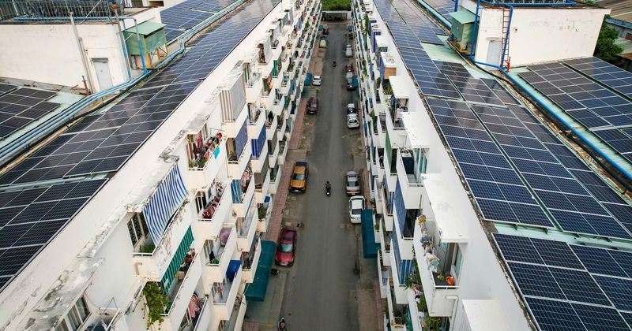
Tin tức đặc biệt trên báo in Thanh Niên 18.5.2026 🔗 MOI
Quyết liệt thắp sáng hàng triệu mái nhà Bộ Công thương đặt mục tiêu trong năm nay có 10% cơ quan công sở và 10% hộ gia đình sử dụng điện mặt trời mái nhà Ảnh: Nhật Thịnh Bộ Công thương đặt mục tiêu tr
Bé An và Cò của ‘Đất rừng phương Nam’ hội ngộ gây chú ý 🔗 MOI
Hôm 17.5, sự kiện khởi động dự án điện ảnh Đất Đỏ diễn ra tại TP.HCM, mở ra hành trình tái hiện chân dung anh hùng Võ Thị Sáu trên màn ảnh rộng. Tại đây, đạo diễn hình ảnh Lý Thái Dũng, thiết kế mỹ th
Chung kết 3 cúp châu Âu: Lịch sử sẽ gọi tên ai ? 🔗 MOI
Palace noi gương Forest ngày xưa ? Sáu đội bóng chuẩn bị tranh tài ở các trận chung kết 3 cúp châu Âu mùa này chỉ mới có được tổng cộng 4 chiếc cúp tầm châu lục (không tính Siêu cúp). Đó là cúp C1 châ
Vì sao robot chiến đấu có thể khiến chiến tranh tàn khốc hơn? 🔗 MOI
Ảnh: Time Vậy robot được trang bị AI là gì và chúng làm được những gì? Trước hết, chúng có "hình người", có đủ thân, đầu và chân tay. Trang Popular Mechanic dẫn lời tiến sĩ Michael Hochberg, nhà vật l
Nhà đất đang thế chấp ngân hàng bị giải phóng mặt bằng, giải quyết nợ ra sao? 🔗 MOI
Anh Lê Hồng Hải (phố Hồng Hà, Hà Nội) cho biết, khu đất nhà anh nằm trong diện thu hồi, giải tỏa mặt bằng để thành phố xây dựng dự án. Tuy nhiên, hiện nay giấy chứng nhận quyền sử dụng đất đang được g
Bản tin thời sự sáng 18/5/2026: Sản lượng tiêu thụ điện trên toàn quốc tiếp tục lập kỷ lục mới 🔗 MOI
Thực phẩm bẩn: Trị thẳng tay để không ai được hại dân mình 🔗 MOI
(PLO)- Phải trị tận gốc nạn thực phẩm bẩn khi nó đang len lỏi vào trường học, vào công ty suất ăn công nghiệp, vào từng món ăn trên mâm cơm hàng ngày gây nguy hại cho sức khỏe người dân. Những con heo
Video UAV Ukraine tập kích tàu chiến, hệ thống phòng không Nga 🔗 MOI
Theo Defense Express, Bộ Quốc phòng Ukraine ngày 17/5 đã công bố đoạn video ghi lại chiến dịch tập kích UAV của nước này nhắm vào nhiều mục tiêu Nga trong 24h qua. "Các đơn vị UAV của Ukraine đã tấn c
WHO nâng mức cảnh báo dịch Ebola lên khẩn cấp, Bộ Y tế lên tiếng 🔗 MOI
Tối 17-8, Bộ Y tế thông tin về dịch Ebola, cho biết Tổ chức Y tế thế giới (WHO) đã tuyên bố đợt bùng phát tại Cộng hòa dân chủ Congo và Uganda là tình trạng y tế công cộng khẩn cấp gây quan ngại quốc
Chiến sự Ukraine ngày 1.544: Kyiv tấn công ồ ạt vào Moscow 🔗 MOI
Hãng tin TASS đưa tin hệ thống phòng không Nga đã đẩy lùi một cuộc tấn công bằng máy bay không người lái (UAV) quy mô lớn của Ukraine vào thủ đô Moscow và tỉnh Moscow trong đêm 16.5 và rạng sáng 17.5.
Ukraine tăng hỏa lực tầm xa nhằm vào Nga 🔗 MOI
Chính quyền Nga hôm qua thông báo có ít nhất 3 người thiệt mạng và 17 người bị thương trong đợt tấn công tại vùng thủ đô Moscow từ đêm 16.5 đến rạng sáng 17.5. Thị trưởng Moscow Sergey Sobyanin cho bi
CHÍNH QUYỀN SỐ CHẠM TỚI LÒNG DÂN (*): AI "vào cuộc" cùng CSGT 🔗 MOI
Điều đó còn để chủ động cung cấp thông tin chính thống,kịp thời, góp phần đẩy lùi tin giả trên không gian mạng. Trong bối cảnh không gian mạng phát triển mạnh, trở thành một trong những kênh tiếp cận
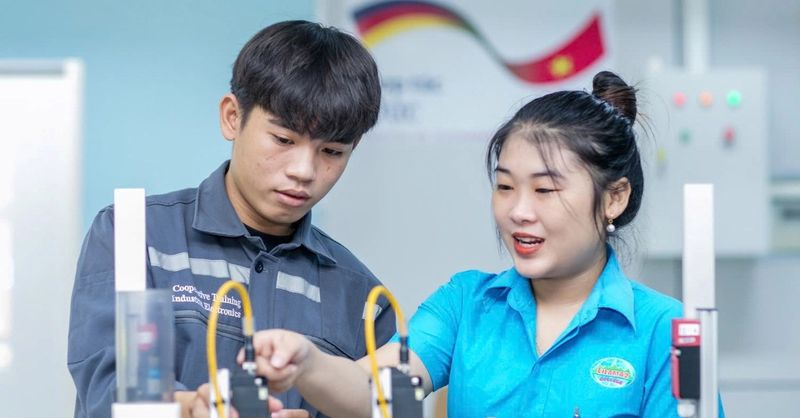
Đổi mới liên tục để xây dựng trường nghề chất lượng cao 🔗 MOI
Sinh viên Trường CĐ quốc tế LILAMA 2 (Đồng Nai) thực hành trong khuôn khổ chương trình đào tạo theo định hướng tiêu chuẩn Đức - Ảnh: GIZ VN Bà Andrea Sũhl, Tổng lãnh sự Đức tại TP.HCM, đã chia sẻ cu
Võ Minh Lâm là giám khảo trẻ nhất cuộc thi Tài năng diễn viên cải lương toàn quốc 2026 🔗 MOI
Nghệ sĩ Võ Minh Lâm là giám khảo trẻ tuổi nhất cuộc thi - Ảnh: LINH ĐOAN Võ Minh Lâm vinh dự được mời làm giám khảo bên cạnh những nghệ sĩ kỳ cựu như NSND Trần Ngọc Giàu - Chủ tịch hội đồng giám khảo
Dư luận Thái Lan lo lắng Việt Nam 'sẽ thống trị bóng đá Đông Nam Á trong 10 năm tới' 🔗 MOI
U17 Việt Nam khiến bóng đá Thái Lan lo lắng - Ảnh: AFC Trên Pantip - diễn đàn thể thao lớn bậc nhất Thái Lan, một chủ đề lớn đang thu hút sự chú ý của người hâm mộ bóng đá xứ sở chùa vàng - đó là "cuộ

Ngành vận tải biển quý 1/2026: Hầu hết tăng trưởng, Vinaship lãi đột biến nhờ bán tàu 🔗 MOI
Quý 1/2026, nhiều doanh nghiệp vận tải biển ghi nhận tăng trưởng cả về doanh thu và lợi nhuận, đặc biệt Vinaship dù doanh thu giảm nhưng vẫn báo lãi đột biến nhờ khoản thu nhập từ thanh lý tàu.

Huy động nguồn lực cho tăng trưởng xanh 🔗 MOI
Pháp luật Bài viết phân tích tiềm năng, thực trạng và định hướng phát triển các mô hình du lịch biển tại Việt Nam nhằm hướng tới một nền kinh tế biển xanh, bền vững. Với đường bờ biển dài hơn 3.260 km
giá phát điện 🔗 MOI
Giá trần (cao nhất) của khung giá phát điện, chưa bao gồm thuế giá trị gia tăng, áp dụng cho các nhà máy điện mặt trời, điện gió chuyển tiếp từ 1.184,90 – 1.815,95 đồng/kWh tùy từng loại hình.
An Giang định hình cực tăng trưởng mới của ĐBSCL 🔗 MOI
An Giang định hướng trở thành cực tăng trưởng mới của Đồng bằng sông Cửu Long với mô hình phát triển đa cực, lấy kinh tế biển, logistics, du lịch, chuyển đổi số và liên kết vùng làm động lực tăng trưở
Tháo gỡ khó khăn trong giải phóng mặt bằng 🔗 MOI
Chính vì thế, từ đầu năm đến nay, thành phố Đà Nẵng tập trung đẩy mạnh giải phóng mặt bằng, khơi thông nguồn lực đất đai tạo điều kiện sớm hoàn thành các dự án trọng điểm. Nhận diện "điểm nghẽn" Dự án
Cơ chế tự chỉnh đốn, nâng cao năng lực lãnh đạo, cầm quyền của Đảng 🔗 MOI
Nghị quyết Đại hội XIV của Đảng đã xác định tầm nhìn và định hướng phát triển đất nước có tính cách mạng, đặt ra nhiều vấn đề mới, yêu cầu rất cao; là bước ngoặt mới, vận hội mới mang tính lịch sử đối
'Doraemon' vừa công chiếu đã bỏ túi 37 tỷ, 'Tạm biệt Gohan' đứng thứ 2 🔗 MOI
Phim điện ảnh Doraemon: Nobita và lâu đài dưới đáy biển (Phiên bản mới) (tựa tiếng Anh: Doraemon The Movie: New Nobita and the Castle of the Undersea Devil) dù tới 22/5 mới chính thức công chiếu nhưng
Cú sốc của nhân viên Việt trong công sở châu Âu 🔗 MOI
Kết thúc ngày đầu tiên đi làm cho một công ty Đức, Thu Trang, 24 tuổi, nhận được email cảnh cáo vì lỗi "làm nhiều hơn 8 tiếng một ngày". Đầu năm 2025, Trang sang bang Hessen, Đức học thạc sĩ. Sau 6 th
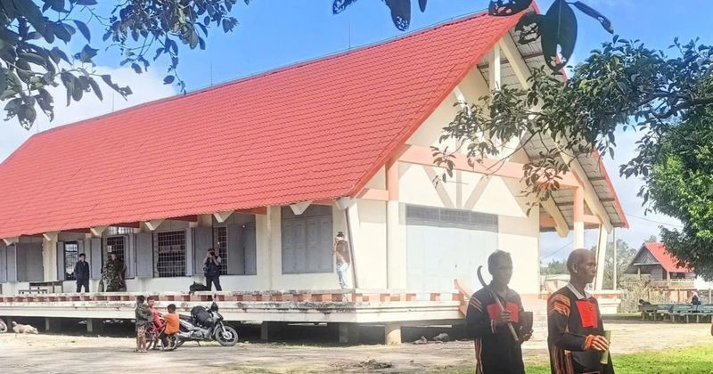
Thanh âm buôn cổ 🔗 MOI
Chung tay bảo tồn Đường đến buôn cổ M’Liêng (xã Đắk Liêng, tỉnh Đắk Lắk) bây giờ được thảm nhựa thẳng tắp từ quốc lộ vào tận buôn. Ngôi nhà cộng đồng bề thế án ngữ ngay đầu buôn. Ngôi nhà này, được Bộ
Ưu tiên mở rộng cao tốc 2 làn xe lên quy mô hoàn chỉnh 🔗 MOI
Cao tốc Cam Lộ-La Sơn 2 làn xe đang được thi công mở rộng Theo báo cáo của Bộ Xây dựng, cả nước đang có khoảng 2.801km đường cao tốc đã và đang được phân kỳ đầu tư, trong đó đã đưa vào khai thác và th
Bộ Xây dựng đề xuất cấp 10.000 tỷ đồng vốn điều lệ làm Quỹ nhà ở Trung ương 🔗 MOI
Số lượng dự án đã hoàn thành, khởi công, chấp thuận chủ trương đầu tư đến năm 2025 đạt 72% so với chỉ tiêu 1 triệu căn nhà ở xã hội - Ảnh: Báo Xây dựng Bộ Xây dựng vừa có báo cáo về phát triển nhà ở x
Mỹ nêu 5 điều kiện tiếp tục đàm phán với Iran 🔗 MOI
TIN MỚI Ngày 17/5, Mỹ đưa ra phản hồi đối với 5 điều kiện "tối thiểu" do Iran đề xuất để tham gia vòng đàm phán thứ hai nhằm chấm dứt cuộc xung đột đang diễn ra ở Trung Đông. Theo hãng thông tấn Fars
Mỹ tìm cách 'tàng hình' lực lượng quân y trước drone 🔗 MOI
"Chân tôi bị sao vậy?", người lính Mỹ trẻ nhìn xuống lớp gạc thấm máu giả quấn quanh đầu gối, nơi chân trái của anh giờ đã "không còn". Anh nằm trên cáng cứu thương, nhắm nghiền mắt, ngửa đầu ra sau v
Lộ thêm hình ảnh 'VinFast VF 8' mới 🔗 MOI
Một số hình ảnh chính thức của mẫu SUV mới vừa được VinFast công bố (Ảnh đã được chỉnh sáng để làm rõ các chi tiết thiết kế) - Ảnh: VinFast Trang fanpage chính thức của VinFast đang thu hút sự quan tâ

Xoắn dây tinh và thời gian vàng cấp cứu 🔗 MOI

Bộ Tài chính đồng hành cùng doanh nghiệp nhỏ và vừa trên hành trình chuyển đổi kép 🔗 MOI
Chuyển đổi số Trong bối cảnh tiêu chuẩn ESG, yêu cầu Net Zero và sức ép cạnh tranh toàn cầu ngày càng gia tăng, phần lớn doanh nghiệp Việt Nam, đặc biệt là doanh nghiệp nhỏ và vừa đang đối mặt với kho
Doanh nghiệp thực phẩm gặp khó với hồ sơ tự công bố 🔗 MOI
Cơ quan chức năng TP.HCM kiểm tra an toàn vệ sinh thực phẩm tại một chợ đầu mối trên địa bàn - Ảnh: N.TRÍ. Trao đổi với Tuổi Trẻ ngày 16-5, bà Nguyễn Thụy Nhã Phương, đại diện BEL Việt Nam, cho biết t
Chủ tịch Trịnh Văn Tuấn bị khởi tố: Tài sản chục nghìn tỉ, PC1 ra sao sau thời tăng trưởng mạnh? 🔗 MOI
Ông Trịnh Văn Tuấn, Chủ tịch HĐQT Công ty Cổ phần Tập đoàn PC1 - Ảnh: Báo cáo thường niên của DN Như Tuổi Trẻ Online đã đưa tin, ông Trịnh Văn Tuấn, Chủ tịch HĐQT Công ty CP Tập đoàn PC1 và 6 người nộ
Lại thêm 2 cô gái bị hành hung giữa đêm ở Hà Nội 🔗 MOI
Hình ảnh hai cô gái bị nam thanh niên hành hung - Ảnh cắt từ clip Ngày 17-5, mạng xã hội lan truyền clip ghi lại cảnh hai cô gái bị hai nam thanh niên đi xe máy đuổi theo, hành hung trong đêm. Theo nộ
Quảng Ninh mời đầu tư trường liên cấp hơn 143 tỷ đồng 🔗 MOI
UBND phường Cao Xanh, tỉnh Quảng Ninh vừa phát thông báo mời gọi nhà đầu tư thực hiện dự án Trường Tiểu học, THCS và THPT trên địa bàn với tổng vốn đầu tư hơn 143,8 tỷ đồng. Dự án được định hướng xây
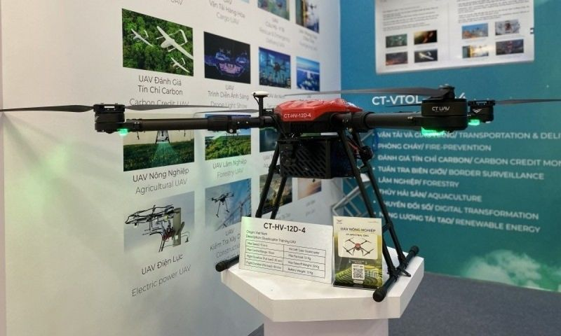
Áp dụng danh mục mới về công nghệ cao ưu tiên phát triển 🔗 MOI
Từ ngày 1/7/2026, Việt Nam áp dụng danh mục mới gồm 70 công nghệ cao ưu tiên đầu tư phát triển và 100 sản phẩm công nghệ cao được khuyến khích phát triển. Phương tiện bay không người lái nằm trong dan
Tiêu chuẩn kỹ thuật - “Hạ tầng mềm” thực hiện Nghị quyết 57-NQ/TW 🔗 MOI
Vai trò của tiêu chuẩn đối với sản phẩm công nghệ chiến lược Một trong những yêu cầu quan trọng khi triển khai Nghị quyết 57-NQ/TW về đột phá phát triển khoa học, công nghệ, đổi mới sáng tạo và chuyển
Nâng cao chất lượng truyền thông về hệ giá trị quốc gia 🔗 MOI
Tuy nhiên trong kỷ nguyên công nghệ , truyền thông về hệ giá trị đang đặt ra nhiều thách thức đòi hỏi phải có sự đổi mới phương thức cho phù hợp. Phát huy hơn nữa vai trò cơ quan truyền thông chủ lực,
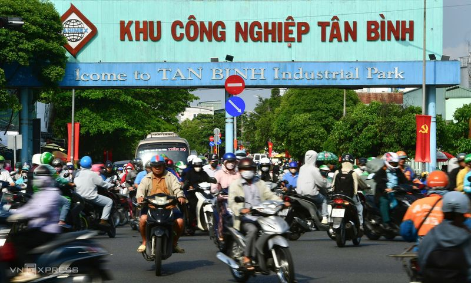
TP HCM hụt hơi trên 'đường ray cũ' 🔗 MOI
Trưa đầu tháng 5, điểm nóng giao thông phía Tây Bắc TP HCM vẫn ken đặc xe cộ. Tại ngã ba Tây Thạnh - Trường Chinh, cửa ngõ vào Khu công nghiệp Tân Bình, xe máy, xe tải, container chen nhau len qua khu
Ôm máy tính cũ chinh phục hàng chục giải lập trình khắp thế giới 🔗 MOI
Một tháng qua, Hoàng Hùng Anh, học sinh lớp 12D2, Trường Tiểu học, THCS và THPT FPT Bắc Ninh, liên tục nhận thư báo trúng tuyển và học bổng từ gần 10 trường đại học cho ngành AI và Công nghệ thông tin
Mbappe kiến tạo, Vinicius giúp Real Madrid gieo sầu cho Sevilla 🔗 MOI
Sevilla bước vào cuộc tiếp đón Real Madrid với quyết tâm lớn khi vẫn cần điểm để chắc chắn trụ hạng. Đội chủ nhà nhập cuộc chủ động, pressing quyết liệt và tạo ra nhiều sức ép trong những phút đầu. Os
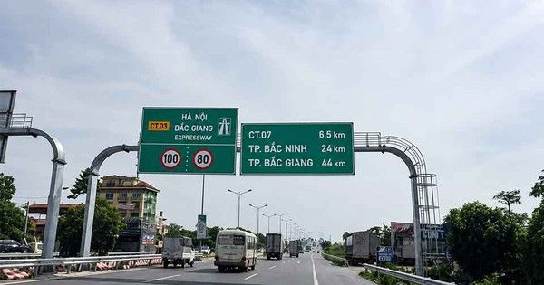
Đề xuất nâng cấp QL1 đoạn Hà Nội-Bắc Giang thành đường cao tốc 8 làn xe 🔗 MOI
Dự án Quốc lộ 1 đoạn Hà Nội-Bắc Giang được đề xuất nâng cấp lên 8 làn xe sẽ góp phần thúc đẩy tăng trưởng kinh tế-xã hội của tỉnh Bắc Ninh - Ảnh: Báo Bắc Ninh Ông Lê Minh Nam, Phó Giám đốc Ban Quản lý
GS.TS Nguyễn Tiến Thảo: Học sinh Việt Nam có thế mạnh về khoa học tự nhiên 🔗 MOI
Thưa Giáo sư, ông đánh giá thế nào về việc tổ chức các ngày hội tư vấn tuyển sinh chuyên biệt cho khối ngành Khoa học và Công nghệ trong giai đoạn hiện nay? Tôi đánh giá rất cao chương trình Ngày hội
Chuyện 4 chiếc nhẫn vàng được giữ kín suốt 26 năm đến ngày xuất hiện trong đám cưới 🔗 MOI
Một đám cưới ở Ninh Bình ngày 11.5 vừa qua trở thành câu chuyện được chia sẻ rộng rãi, vì một khoảnh khắc khiến cả hội trường xúc động. Người bác 80 tuổi bước lên sân khấu, run run lấy ra 4 chiếc nhẫn
Công an xác minh vụ 2 cô gái trẻ bị đuổi đánh giữa đêm 🔗 MOI
Ngày 17-5, Công an phường Xuân Đỉnh (TP Hà Nội) đang điều tra, làm rõ vụ hai cô gái bị đánh đuổi giữa đêm vào ngày 16-5 trên địa bàn phường. Vụ xô xát xảy ra lúc nửa đêm. Ảnh chụp màn hình Trước đó tr
Sứ mệnh khám phá từ trường trái đất 🔗 MOI
dự kiến được phóng từ tàu sân bay vũ trụ ở Guiana, lãnh thổ hải ngoại của Pháp, ngày 19-5. Đây là sứ mệnh đầu tiên được Cơ quan Vũ trụ châu Âu (ESA) và Viện Hàn lâm Khoa học Trung Quốc (CAS) cùng lên
Va chạm với ô tô Porsche ở Hà Nội, xe máy biến dạng 🔗 MOI
Khoảng 15h45 ngày 17/5, tại đường Nguyễn Văn Huyên kéo dài (phường Xuân Đỉnh) xảy ra vụ va chạm giao thông giữa ô tô nhãn hiệu Porsche với xe máy. Thời điểm này, xe Porsche mang BKS 30K-987.XX di chuy
Phân luồng hai cầu vượt khi thông xe cao tốc Biên Hòa - Vũng Tàu 🔗 MOI
Ngày 17/5, Ban Quản lý dự án đầu tư xây dựng TP Đồng Nai cho biết dự án thành phần 1, đoạn từ nút giao Võ Nguyên Giáp đến nút giao Long Thành, dự kiến thông xe từ 17h ngày 18/5. Trước đó, hai dự án th
Ca bệnh hy hữu: Từ nốt ruồi nhỏ, ung thư xâm nhập phá hủy cánh mũi 🔗 MOI
Hình ảnh trước và sau khi phẫu thuật loại bỏ khối u, phục hình cánh mũi cho bệnh nhân - Ảnh: BVCC Dấu hiệu ung thư từ nốt ruồi nhỏ TS Nguyễn Hữu Quang, Phó trưởng khoa phẫu thuật tạo hình thẩm mỹ và p
Ghép tim thần tốc cứu sống cậu bé 15 tuổi ở TP.HCM 🔗 MOI
Các bác sĩ Bệnh viện Đại học Y Dược TP.HCM đang ghép tim cho bệnh nhân - Ảnh: Bệnh viện cung cấp Tối 17-5, Bệnh viện Đại học Y Dược TP.HCM cho biết các bác sĩ của bệnh viện đã thực hiện thành công ca
Giáo dục xuyên quốc gia của Anh: Số lượng sinh viên tăng đưa Việt Nam thành ngoại lệ 🔗 MOI
Sinh viên quốc tế học tập tại Anh - Ảnh: SKY NEWS Theo báo cáo UK TNE in East Asia do Hội đồng Anh công bố tháng 5-2026, số sinh viên theo học các chương trình giáo dục xuyên quốc gia (TNE) của Anh tạ
'Xin lỗi, cảm ơn nhiều người nhưng chưa từng nói với ba mẹ' 🔗 MOI
Bạn Quỳnh Anh (lớp 12A10) nhận được sự động viên và đồng hành của mẹ trong buổi lễ tri ân - trưởng thành của học sinh lớp 12, Trường THPT Nguyễn Thị Minh Khai (phường Xuân Hòa) tối 16-5 - Ảnh: THANH H
Đình Bắc phản ứng khi bị đồng đội tranh đá phạt đền 🔗 MOI
Đình Bắc bị Alan tranh đá phạt đền - Ảnh: MINH ĐỖ Tối 17-5, CLB Công An Hà Nội đấu Thanh Hóa trên sân Hàng Đẫy, thuộc vòng 23 LPBank V-League 2025 - 2026. Hai đội hòa nhau 0-0 tới phút 85 thì đội bóng
Rating Perfect Crown chạm đỉnh khi khép lại, bất chấp chỉ trích xuyên tạc lịch sử 🔗 MOI
Perfect Crown là phim truyền hình trọng điểm của Disney+ ra mắt vào nửa đầu năm 2026 - Ảnh: MBC Theo Nielsen Korea , tập cuối của Perfect Crown phát sóng tối 16-5 đạt rating 13,8% toàn quốc, tăng 0,3
Chia tay bún bò O Kay, nước trong mang theo cả sự chậm rãi của Huế 🔗 MOI
Tô bún bò O Kay nước trong vắt, vị thơm đặc trưng - Ảnh: HOÀNG LAM 9h sáng thứ sáu, ghé quán đã thấy tấm biển "Hết bún - Chân thành xin lỗi" treo trước căn nhà có cánh cửa xanh nổi bật. Xem ra để thưở
Ba tôi: lặng thầm một đời thương 🔗 MOI
Đại gia đình tôi đoàn viên dịp Tết vừa rồi - Ảnh: L.X. TP.HCM đang vào mùa mưa. Ngày bà tôi mất, trời mưa như trút nước.
Thủ lĩnh sinh viên TP.HCM lần thứ 8 tranh ngôi 🔗 MOI
Top 7 vào chung kết Thủ lĩnh sinh viên TP.HCM 2026: Phạm Hoàng Tấn Lộc, Trần Thị Ngân Phúc, Hà Đức Cường (hàng trước từ trái qua) và Trần Duy Tân, Nguyễn Thành Thái Bảo, Trần Công Thành, Lê Quang

Hiểu đúng thí điểm vùng phát thải thấp từ 1-7: Không cấm hết xe máy xăng như lời đồn 🔗 MOI
Chi tiết khu vực dự kiến thí điểm vùng phát thải thấp tại Hà Nội từ ngày 1-7-2026 - Ảnh: VTV Từ ngày 1-7, Hà Nội bắt đầu triển khai thí điểm vùng phát thải thấp (Low Emission Zone - LEZ) tại 9 phường
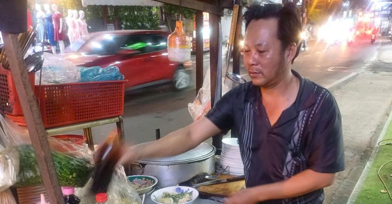
Dặm dài hủ tiếu - Kỳ 3: Người Quảng tha hương bán hủ tiếu 🔗 MOI
Anh Phạm Thành Lập từ cậu bé gõ thanh tre phụ bán hủ tiếu nay đã có xe bán riêng ở TP.HCM - Ảnh: Minh Tân Thanh âm gọi mời Sách Nước Nam một thuở do Nhà xuất bản Mỹ Thuật ấn hành có bài viết: "Tiếng r
Tàu NASA 'mượn lực' sao Hỏa săn tiểu hành tinh kim loại quý 🔗 MOI
Hình ảnh sao Hỏa hình lưỡi liềm được tàu vũ trụ Psyche chụp khi bay gần hành tinh này - Ảnh: NASA/JPL-Caltech/ASU Ngày 15-5, tàu vũ trụ Psyche của Cơ quan Hàng không và Vũ trụ Mỹ (NASA) đã thực hiện c
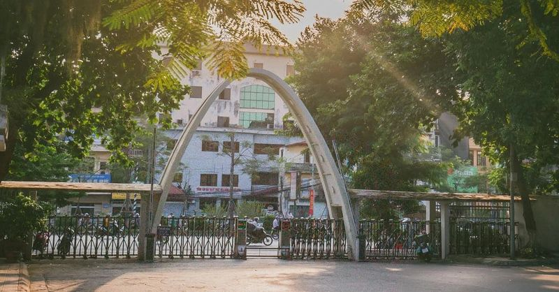
Cổng Parabol Bách khoa có thể nằm trong khu vực giải tỏa khiến nhiều người tiếc nuối 🔗 MOI
Cổng Parabol là một trong ba cổng chính dẫn vào trường - Ảnh: HUST Những ngày gần đây, nhiều sinh viên, cựu sinh viên của Đại học Bách khoa Hà Nội bày tỏ sự nuối tiếc khi nghe tin cổng Parabol của đại
Đài Loan tuyên bố 'không thể bị hy sinh hay đem ra trao đổi' 🔗 MOI
Nhà lãnh đạo Đài Loan Lại Thanh Đức - Ảnh: REUTERS Theo Hãng tin AFP, ngày 17-5, lãnh đạo Đài Loan Lại Thanh Đức đã lên tiếng bảo vệ hoạt động hợp tác an ninh và phòng vệ giữa hòn đảo này và Mỹ. Trong

quản lý ngân sách hiệu quả, phục vụ chính quyền địa phương 2 cấp 🔗 MOI
Tài chính Không chỉ tinh gọn, sắp xếp bộ máy và kịp thời tham mưu, ban hành, triển khai các văn bản hướng dẫn về kế toán phục vụ mô hình chính quyền địa phương 2 cấp, tham gia các đoàn công tác cùng B
Lộ diện tân 'Thủ lĩnh sinh viên' và 'Thủ lĩnh học sinh THPT' TP.HCM 2026 🔗 MOI
Bạn Hà Đức Cường (thứ 2 từ bên phải) là "Thủ lĩnh sinh viên" TP.HCM 2026, bạn Lương Nguyễn Hiền Trinh (thứ 2 từ bên trái) là “Thủ lĩnh học sinh THPT” TP.HCM năm 2026 - Ảnh: LÊ HUY Tối 17-5, Hội thi “Đ
Nguyên Phó chủ tịch Quốc hội: Báo chí nâng đỡ 'mầm xanh' nông nghiệp, thúc đẩy thành xu hướng 🔗 MOI
Ông Lê Minh Hoan, nguyên Phó chủ tịch Quốc hội (thứ 2 từ phải qua), tham quan tòa soạn báo Tuổi Trẻ và đề nghị báo tiếp tục phát huy lợi thế truyền thông số, hệ sinh thái đa nền tảng để thúc đẩy chuyể
NSND Tự Long hát 'Mẹ yêu con' tại Studio 3, khán giả xúc động bảo có thể khóc luôn và ngay 🔗 MOI
Nghệ sĩ Tự Long ôm chầm Uyên Thư Tiết mục của nghệ sĩ Tự Long được thể hiện ngay sau câu chuyện xúc động giữa đạo diễn Đinh Hà Uyên Thư và mẹ, khiến cảm xúc của khán giả càng được đẩy lên cao. Cuộc hộ
Hollywood sợ, Netflix từ chối Cannes? 🔗 MOI
Buổi ra mắt phim Moulin Rouge tại Liên hoan phim Cannes 2001 - Ảnh: Corbis Năm 2001, Thierry Frémaux đến Cannes với một nhiệm vụ: xây dựng cầu nối với Hollywood. Vị giám đốc của liên hoan phim khi đó
Bộ đôi mạnh nhất lịch sử One Piece: Joy Boy và Imu từng là đồng minh 🔗 MOI
Khi One Piece tiến gần đến trận đại chiến cuối cùng, mối quan hệ giữa Joy Boy và Imu nhiều khả năng sẽ tiếp tục được Eiichiro Oda khai thác sâu hơn trong các chương sắp tới - Ảnh: GameRant Arc Elbaph
Bồi hồi xem lại Ngọc Giàu, Minh Vương thuở xưa trong Rạng ngọc Côn Sơn 🔗 MOI
Hình ảnh và lời ca của nghệ sĩ Ngọc Giàu và Minh Vương khi xưa trong vở Rạng ngọc Côn Sơn được phát lại khiến người xem xúc động - Ảnh: LINH ĐOAN Chương trình văn nghệ chào mừng do Trung tâm nghệ thuậ
🔗 MOI
Chia sẻ với Thanh Niên , ông Lâm Đức Thái - Quyền Phó Tổng Giám đốc Kênh Đại lý FWD Việt Nam - cho biết FWD đang đẩy mạnh xây dựng Kênh Đại lý bằng chiến lược đa dạng hóa mô hình kinh doanh, nhằm tạo
‘Sức khỏe’ hộ kinh doanh suy giảm 🔗 MOI
Doanh thu, lợi nhuận của đa số hộ kinh doanh đều giảm trong năm 2025 - Ảnh: B.NGỌC Đây là những thông số về sự suy giảm "sức khỏe" của hộ kinh doanh trong năm 2025 vừa được Liên đoàn Thương mại và côn
Nhạc sĩ Nguyễn Văn Chung: 'Tôi đã quá quen với việc bị ăn cắp chất xám' 🔗 MOI
Nhạc sĩ Nguyễn Văn Chung nhiều lần lên tiếng về việc xâm phạm quyền tác giả - Ảnh: FBNV Sau thông tin Cơ quan cảnh sát điều tra Bộ Công an ra quyết định khởi tố năm vụ án hình sự về tội " xâm phạm quy
Bắt tạm giam một người ở An Giang sử dụng vũ khí quân dụng 🔗 MOI
Lê Hải Hùng tại cơ quan công an - Ảnh: HOÀNG ĐÔ Theo đó, Công an tỉnh An Giang cho biết khoảng 7h ngày 30-1-2026, tại khóm Đông Thạnh (phường Mỹ Thới, tỉnh An Giang), do mâu thuẫn trong sinh hoạt, Lê
Người Ơ Đu ăn Tết đón tiếng sấm 🔗 MOI
Thầy mo Lo Văn Cường làm lễ đón tiếng sấm trước nhà cộng đồng 20 năm tái định cư ở bản Văng Môn (xã Nga My, Nghệ An), người Ơ Đu - dân tộc ít người nhất Việt Nam - không chỉ dần ổn định cuộc sống mà c
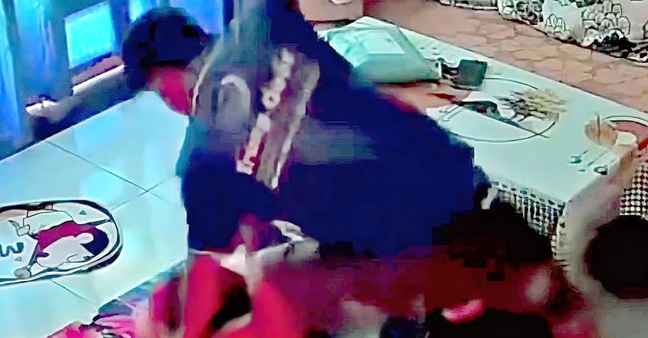
Dạy trẻ đâu phải đòn roi 🔗 MOI
Ảnh clip cha dượng Bùi Trung Quốc đè đánh bé T. Vụ việc người đàn ông ở Dĩ An bạo hành con riêng của "vợ hờ" mãi đến khi bị cơ quan công an tạm giữ hình sự thì người dân trong xóm mới nhận ra đó là hà
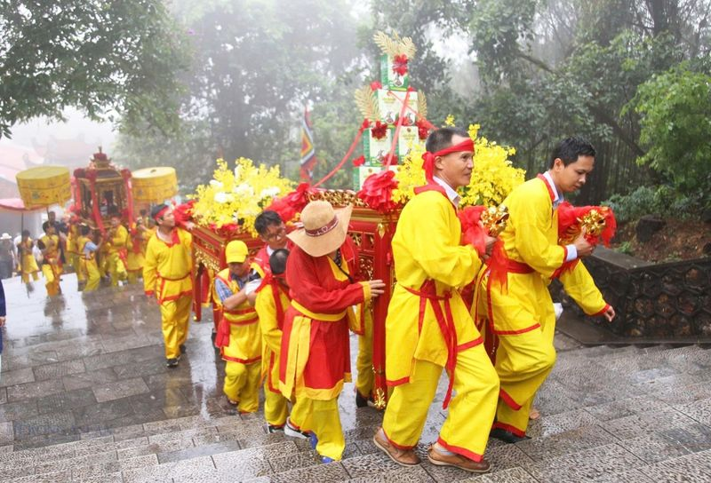
Lễ hội truyền thống đền Cao An Phụ, tưởng nhớ An Sinh vương Trần Liễu 🔗 MOI
Lễ hội truyền thống đền Cao An Phụ năm 2026, tưởng niệm 775 năm ngày mất của An Sinh vương Trần Liễu được Ban Quản lý di tích Côn Sơn - Kiếp Bạc và phường Phạm Sư Mạnh tổ chức tại di tích quốc gia đặc
Biến động ở đội tuyển bóng chuyền Việt Nam 🔗 MOI
Vì sao vắng bóng cầu thủ Binh chủng Thông tin ? Bất ngờ nhất trong danh sách 14 tuyển thủ bóng chuyền nữ VN tập trung lần này là việc không có VĐV nào của CLB Binh chủng Thông tin. Trước đây CLB này t

Đổi mới công tác xây dựng và thi hành pháp luật: Dấu ấn 1 năm thực hiện Nghị quyết số 66-NQ/TW 🔗 MOI
Tài chính Trong tiến trình phát triển đất nước, cải cách thể chế luôn được xác định là khâu đột phá để khơi thông nguồn lực và nâng cao năng lực cạnh tranh quốc gia. Trên nền tảng những chuyển động mạ

Chính phủ với công dân 🔗 MOI
17/05/2026 (Chinhphu.vn) - Ông Mai Anh Đà (Gia Lai) gặp một số trường hợp thửa đất có nguồn gốc là đất ở và đất vườn đã được tách thửa, cho tặng hoặc chuyển... 17/05/2026 (Chinhphu.vn) - Ủy ban Kiểm t

Khu Công nghiệp, Khu Kinh tế 🔗 MOI
Theo yêu cầu của Thủ tướng, lãnh đạo Bộ, ngành, địa phương phải chỉ đạo hoàn thành việc xử lý các cơ sở nhà, đất dôi dư sau sáp nhập trước ngày 25/5, không để tình trạng hư hỏng, xuống cấp, lãng phí.
WHO: Đợt bùng phát virus Hanta 'nguy cơ thấp' 🔗 MOI
Tuyên bố của WHO nêu rõ: "Nguy cơ đối với sức khỏe cộng đồng đã được đánh giá lại dựa trên những thông tin cập nhật nhất hiện có và nguy cơ toàn cầu vẫn ở mức thấp". Tuyên bố cho biết thêm: "Mặc dù cá
Argentina phát động chiến dịch vẽ 100 bích họa tưởng niệm lãnh tụ Fidel Castro 🔗 MOI
Theo phóng viên TTXVN tại Buenos Aires, bức tranh đầu tiên được thực hiện tại thành phố Quilmes, thuộc tỉnh Buenos Aires, trong khuôn khổ chiến dịch đoàn kết mang tên “Chúng tôi sát cánh cùng Cuba ”,
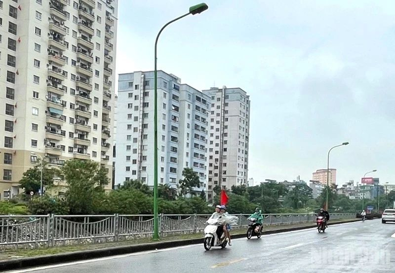
Thời tiết ngày 18/5: Mưa rào và dông ở nhiều nơi trên cả nước, cục bộ có nơi mưa to 🔗 MOI
Theo Trung tâm Dự báo khí tượng thủy văn quốc gia, khu vực Hà Nội có lúc có mưa rào và dông, cục bộ có nơi mưa to. Thành phố Hồ Chí Minh có mưa rào và dông vài nơi, riêng chiều tối và tối có mưa rào v
Đạo đức Hồ Chí Minh - biểu tượng văn hóa sáng ngời 🔗 MOI
Facebook Twitter Lưu bài viết Bản in Copy link Với dân tộc Việt Nam ta, Đảng ta, Chủ tịch Hồ Chí Minh luôn là biểu tượng ngời sáng về đạo đức cách mạng, tấm gương hy sinh, hiến dâng trọn đời cho sự ng
Gắng sức giữ lửa sân khấu cải lương 🔗 MOI
Cuộc thi "Tài năng diễn viên cải lương toàn quốc 2026", do Cục Nghệ thuật Biểu diễn Bộ Văn hóa - Thể thao và Du lịch tổ chức, đã khai mạc tối 17-5 tại Nhà hát Thành phố (TP HCM), thu hút đông đảo văn
[Video] WHO ban bố tình trạng khẩn cấp quốc tế do dịch Ebola bùng phát 🔗 MOI
WHO cho biết đợt dịch liên quan chủng virus Bundibugyo chưa đủ điều kiện để coi là đại dịch, nhưng đang tiềm ẩn nguy cơ lan rộng tại khu vực châu Phi. Giới chức y tế quốc tế khuyến cáo tăng cường giám
Người thầy kính yêu: Cô giáo âm thầm gieo "nhân học" 🔗 MOI
Chúng tôi may mắn được học ở Trường THPT Nguyễn Đình Chiểu (Mỹ Tho - Tiền Giang trước đây, nay thuộc tỉnh Đồng Tháp) vốn nổi tiếng với truyền thống dạy giỏi, học giỏi. Ngôi trường này được thành lập t
Công đoàn sát cánh với người lao động 🔗 MOI
Công đoàn TP HCM đang chuyển mạnh từ mô hình chăm lo ngắn hạn sang hỗ trợ phát triển bền vững cho người lao động (NLĐ). Hoạt động chăm lo không chỉ dừng ở việc hỗ trợ trước mắt mà còn hướng đến tạo vi
NSND Quế Trân, NSƯT Võ Minh Lâm ngồi 'ghế nóng' tìm kiếm tài năng cải lương 🔗 MOI
Lãnh đạo Bộ VH-TT-DL, lãnh đạo TP.HCM và đông đảo nghệ sĩ cải lương, sân khấu tham gia sự kiện khai mạc c uộc thi Tài năng diễn viên cải lương toàn quốc 2026 Ảnh: Hữu Tín Tối 17.5, lễ khai mạc cuộc th
Vietnam Padel Open 2026 lần thứ I khép lại thành công 🔗 MOI
Vietnam Padel Open 2026 lần thứ I đã khép lại thành công sau hai ngày tranh tài sôi nổi tại cụm sân Vietpadel Country Club (TPHCM) từ ngày 16 đến 17-5. Giải đấu quy tụ hơn 100 VĐV hàng đầu Việt Nam cù
Chất lượng tác phẩm vẫn là yếu tố quyết định 🔗 MOI
Hai phim nhận được nhiều sự quan tâm của khán giả Bóng ma hạnh phúc, Vì mẹ anh phán chia tay. Ảnh: ĐPCC Trong đó, Bóng ma hạnh phúc ghi nhận 5,9 triệu lượt tương tác, trong khi Vì mẹ anh phán chia tay
Nỗ lực giảm phụ thuộc eo biển Hormuz 🔗 MOI
TIN MỚI Các quốc gia Ả Rập ở vùng Vịnh đang khẩn trương đánh giá khả năng xây dựng những tuyến đường ống mới để đưa dầu khí ra thị trường thế giới mà không phải đi qua eo biển Hormuz đang bị phong tỏa
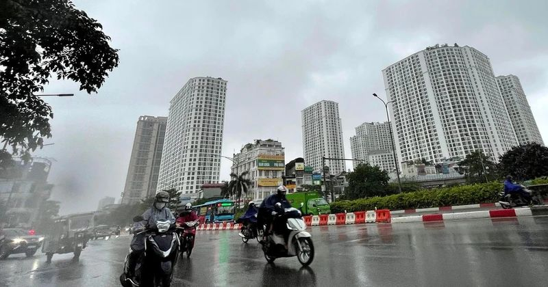
Miền Bắc, miền Trung tiếp tục mưa rất to 🔗 MOI
Đêm qua và sáng sớm nay (18/5), miền Bắc tiếp tục có mưa dông rải rác, nhiều nơi mưa rất to trên 100mm như Nấm Dẩn (Tuyên Quang) 254mm, Mường Khoa 1 (Lai Châu) 249mm. Dự báo ngày và đêm nay, khu vực Đ
Cô giáo kể phút tháo chạy khỏi ô tô khách bị nước lũ vò nát 🔗 MOI
XEM CLIP: Tối qua (16/5), chỉ 20 phút sau mưa lớn, nhiều khu vực ở xã Lý Quốc, tỉnh Cao Bằng bị ngập sâu, đường giao thông sạt lở nghiêm trọng, một xe khách bị nước lũ "vò nát". Chiếc ô tô bị "vò nát"
36 thí sinh tranh tài tại cuộc thi Tài năng Cải lương toàn quốc 2026 🔗 MOI
(PLO)- Cuộc thi Tài năng Cải lương toàn quốc 2026 quy tụ 36 thí sinh, góp phần phát hiện tài năng trẻ, lan tỏa giá trị cải lương và nâng cao chất lượng biểu diễn. Tối 17-5, tại Nhà hát Thành phố, Cục
Carrick hé lộ kế hoạch nâng tầm Man Utd 🔗 MOI
Man Utd khép lại trận sân nhà cuối cùng mùa này hôm 17/5 bằng chiến thắng 3-2 trước Nottingham Forest. Trước trận này, theo truyền thông Anh, đồng sở hữu Jim Ratcliffe đã thông qua thỏa thuận giữ Carr
'Dưới ô cửa sáng đèn' tập 1: Chồng Diệu ghen ra mặt vì anh hàng xóm quá nhiệt tình 🔗 MOI
Dưới ô cửa sáng đèn mở ra câu chuyện đầy cảm xúc về những phận người chật vật giữa cơm áo, gia đình và những giấc mơ dang dở. Sinh (Quang Sự) - ông bố đơn thân cùng đứa em gái Vân (Ngọc Huyền) và nhóm
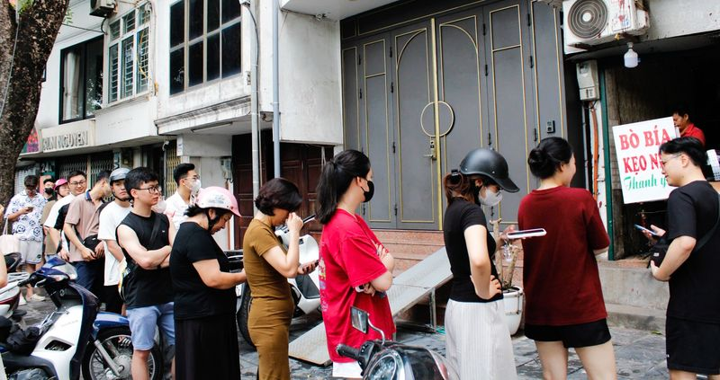
Người đàn ông bán bò bía có ‘thói quen lạ’, khách chờ cả tiếng để mua 🔗 MOI
Khách xếp hàng dài Tranh thủ ngày cuối tuần, từ 13h30, Hoàng Nhi (19 tuổi) và bạn thân đi xe máy tới phố Yên Phụ để tìm "xe bò bía nổi tiếng nhất Hà Nội". Khi tới nơi, thấy ngôi nhà "cửa đóng then cài
Nữ ca sĩ vực dậy sau 3 năm vắng bóng, tiết lộ niềm hạnh phúc tuổi 40 🔗 MOI
Chia sẻ về cột mốc đáng nhớ trong sự nghiệp, Nguyễn Hải Yến cho biết đó là khi cô giành chiếc cúp á quân tại cuộc thi Tuyệt đỉnh tranh tài . Với nữ ca sĩ, đây là dấu mốc quan trọng sau 3 năm cô tạm ng
Khơi dậy hào khí sáng tạo: Từ lời dạy của Bác đến ánh sáng Nghị quyết 57 🔗 MOI
Facebook Twitter Lưu bài viết Bản in Copy link Ngày 18/5/2026 không chỉ là ngày kỷ niệm của giới khoa học, công nghệ. Đây còn là một dấu mốc nhắc nhở cả hệ thống chính trị, cộng đồng doanh nghiệp, đội
Bruno Fernandes cân bằng kỷ lục kiến tạo ở Ngoại hạng Anh 🔗 MOI
Bruno ăn mừng kỷ lục kiến tạo. Ảnh: AP Bruno Fernandes đang có mùa giải đặc biệt cùng MU với khả năng kiến tạo khó tin. Cho dù trải qua nửa mùa giải đầu tiên đầy khó khăn khi phải đá ở vị trí tiền vệ
MU thu về 40 triệu euro từ thương vụ bán đầu tiên 🔗 MOI
Trước đó, chân sút người Đan Mạch đã gia nhập Napoli vào tháng 9 năm ngoái dưới dạng cho mượn. Thỏa thuận giữa hai bên bao gồm điều khoản bắt buộc mua đứt nếu Napoli giành vé tham dự Champions League
Tỉnh táo với 'quyền lực ảo' 🔗 MOI
Đây là một trong những điển hình cho tình trạng phát ngôn vượt quá giới hạn pháp lý trên không gian mạng . Mai Hoàng phát livestream chửi bới, cầm dao dọa chém lực lượng đang làm nhiệm vụ ẢNH: CHỤP MÀ
Cái nôi đào tạo học sinh đa năng 🔗 MOI
Kết nối đam mê môn học cho học sinh Học sinh chuyên Hóa đoạt giải nhất môn Địa lý cấp thành phố, là câu chuyện của Mai Thị Ánh Ngọc, lớp 12 Hóa 2, Trường THPT chuyên Lê Quý Đôn. Câu chuyện tưởng lạ nh
“Ngoại giao quê nhà” giữa Hàn Quốc và Nhật Bản 🔗 MOI
Thủ tướng Nhật Bản Sanae Takaichi và Tổng thống Hàn Quốc Lee Jae Myung trong chuyến thăm tỉnh Nara, Nhật Bản. Ảnh: News1 Mở rộng “ngoại giao con thoi” Chuyến thăm của bà Thủ tướng Nhật Bản Sanae Takai
Ổn định kế hoạch khảo sát tuyển sinh lớp 6 🔗 MOI
Học sinh tham gia kỳ khảo sát tuyển sinh vào lớp 6 Trường THCS-THPT Trần Đại Nghĩa năm học 2025-2026 Cả 5 trường cùng tổ chức khảo sát ngày 1-7 nhằm hạn chế tình trạng “thí sinh ảo” - học sinh chỉ có
Nữ sinh 17 tuổi chống chọi ung thư máu 🔗 MOI
Khoảng 1 tháng trước, Hoa liên tục đau đầu, cơ thể xuất hiện nhiều vết bầm tím bất thường. Gia đình lập tức đưa em xuống TPHCM cấp cứu. Sau nhiều xét nghiệm tại Bệnh viện Truyền máu - Huyết học TPHCM,
Chăm sóc sức khỏe, tiếp động lực cho nữ công nhân 🔗 MOI
Công nhân Công ty TNHH Việt Nam Samho được bác sĩ tư vấn sức khỏe tại chương trình khám sức khỏe, tầm soát ung thư vào đầu tháng 5 Giúp sớm phát hiện bệnh tiềm ẩn Có mặt từ sớm tại chương trình khám s
Định hình thị trường nội dung số lành mạnh 🔗 MOI
Khán giả xem phim trên một trang web cung cấp nội dung giải trí số có bản quyền hợp pháp Qua thời dễ dãi với nội dung lậu Đầu tháng 5, Phó Thủ tướng Hồ Quốc Dũng ký ban hành Công điện số 38/CĐ-TTg của
Để giáo dục Việt Nam cân bằng STEM và khoa học xã hội 🔗 MOI
Khoảng cách giữa chiến lược quốc gia và lựa chọn học đường đang đặt ra bài toán lớn về nguồn nhân lực trong tương lai. Học sinh lớp 12 tại TP.HCM trong giờ học môn sinh. Học sinh thành phố có xu hướng
Việt Nam và câu chuyện bảo hộ sở hữu trí tuệ: Cần một chiến lược bền vững 🔗 MOI
Những ngày vừa qua, lĩnh vực bảo hộ sở hữu trí tuệ (SHTT) nhận nhiều sự chú ý khi Thủ tướng chỉ đạo ra quân đấu tranh, ngăn chặn và xử lý nghiêm các hành vi xâm phạm quyền SHTT trên phạm vi toàn quốc.
Sinner hoàn tất bộ sưu tập Masters 1000 🔗 MOI
Chiến thắng sau một giờ 44 phút giúp tay vợt số một thế giới giành danh hiệu Masters 1000 thứ sáu liên tiếp. Sinner cũng trở thành người thứ hai trong lịch sử, sau Novak Djokovic, hoàn tất Career Gold
Sứ mệnh quốc gia của giáo dục đại học Việt Nam 🔗 MOI
Sau khi Cách mạng Tháng Tám năm 1945 thành công, Đại học Đông Dương được đổi tên thành Đại học Quốc gia (ĐHQG) Việt Nam. Vào thời khắc nước sôi lửa bỏng, đất nước bộn bề khó khăn, ngày 15-11-1945 đã d
🔗 MOI
- Kể từ khi khánh thành Nhà hát Hồ Gươm hồi tháng 7/2023, dường như các concert nhạc cổ điển diễn ra ngày càng thường xuyên và nhạc trưởng như anh cũng bận rộn hơn hẳn? Đúng vậy, đời sống văn hóa - ng
Tottenham sáng cửa trụ lại Ngoại hạng Anh 🔗 MOI
Trên sân St. James Park hôm 17/5, Newcastle nhỉnh hơn và ghi ba bàn nhờ công Nick Woltemade cùng cú đúp của William Osula. Trong khi đó, điểm sáng hiếm hoi của West Ham là pha lập công của Valentin Ca
Top 5 xe đa dụng cỡ trung bán chạy tháng 4: Mazda CX-5 trở lại ngôi đầu 🔗 MOI
Dù thị trường ô tô Việt Nam tăng trưởng hay sụt giảm sức mua, SUV/crossover vẫn luôn là dòng xe chủ lực nhờ phù hợp xu hướng tiêu dùng hiện nay. Thiết kế gầm cao, không gian rộng rãi, tầm quan sát tho

Bác sĩ cảnh báo điều hòa có thể biến thành 'máy phát tán siêu vi khuẩn' 🔗 MOI
TS.BS Nguyễn Hữu Trường, Phó Giám đốc Trung tâm Dị ứng - Miễn dịch lâm sàng, Bệnh viện Bạch Mai, giải thích nhiều người bước vào phòng điều hòa là hắt hơi liên tục, đỏ mũi, khò khè, khó thở, có thể là
Lịch âm hôm nay: Ngày 18.5 là ngày gì đặc biệt? 🔗 MOI
Dương lịch hôm nay là thứ hai, đánh dấu năm 2026 trải qua ngày thứ 137. Theo lịch âm hôm nay 18.5 là ngày 2 tháng 4, theo cách gọi can chi là ngày Nhâm Thìn, tháng Quý Tỵ, năm Bính Ngọ. Như vậy, hôm n
Đình Bắc bị tranh đá penalty trong ngày CAHN đăng quang V-League 🔗 MOI
Phút 86, Đình Bắc bị cầu thủ Thanh Hóa phạm lỗi trong vòng cấm. Sau khi xem VAR, trọng tài Ngô Duy Lân cho đội chủ nhà hưởng quả penalty. Đình Bắc cầm bóng đi tới chấm đá phạt đền.
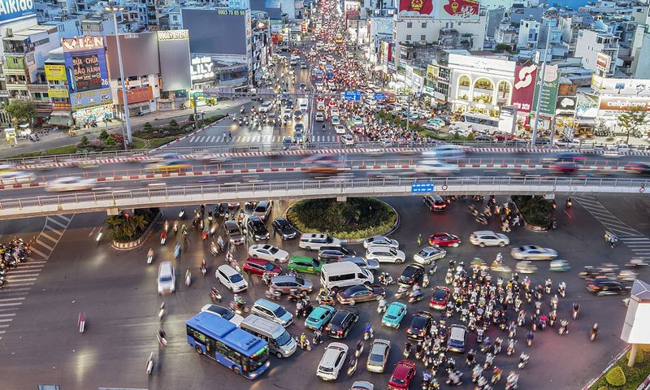
Áp lực giao thông ở ngã tư Hàng Xanh trước cải tạo 🔗 MOI
Khu vực ngã tư Hàng Xanh hiện tập trung nhiều trục giao thông huyết mạch như Điện Biên Phủ, Xô Viết Nghệ Tĩnh, quốc lộ 13, Đinh Bộ Lĩnh và Nguyễn Xí. Nơi đây có mật độ phương tiện cao, thường xuyên xả
Không giỏi toán có thể theo đuổi khoa học, công nghệ? 🔗 MOI
Ông Trần Hồng Thái - Chủ tịch Viện hàn lâm Khoa học và Công nghệ Việt Nam - chia sẻ tại chương trình - Ảnh: BTC Trả lời, ông Trần Hồng Thái - Chủ tịch Viện hàn lâm Khoa học và Công nghệ Việt Nam - cho
Các boss mèo đúng nghĩa từ nhiều quốc gia về Hà Nội thi ‘hoa hậu’ 🔗 MOI
Bé mèo Ba Tư tên “Cu Bi Đu” 1 tuổi đến từ TP.HCM. Bé được nhập khẩu về Việt Nam với giá vài trăm triệu đồng, là một idol trên mạng xã hội. Chia sẻ với Tuổi Trẻ Online , chị Nguyễn Hồng Phương Thảo cho
Mở lối xuống biển cho dân đi: Điều chỉnh quy hoạch dự án ven biển Đà Nẵng 🔗 MOI
Một đoạn khu vực ven biển Ngũ Hành Sơn - Ảnh: ĐOÀN CƯỜNG Việc này được thực hiện sau khi chủ đầu tư có tờ trình thẩm định điều chỉnh quy hoạch chi tiết 1/500 dự án gửi UBND phường Ngũ Hành Sơn. Lý do
Cầu lông Thái Lan trắng tay cay đắng trên sân nhà 🔗 MOI
Kunlavut Vitidsarn gây thất vọng trong trận chung kết Thái Lan mở rộng - Ảnh: BWF Đây là thất bại vô cùng đáng tiếc với Kunlavut - tay vợt xếp hạng 2 thế giới, đồng thời là hạt giống số 2 của nội dung
CLB Quảng Ninh trụ hạng thành công 🔗 MOI
CLB Quảng Ninh (áo xanh) trụ hạng thành công ở Giải hạng nhất - Ảnh: CLB QUẢNG NINH Tối 17-5, CLB Quảng Ninh thi đấu với Quy Nhơn United trên sân khách, thuộc vòng 19 Giải hạng nhất quốc gia Bia Sao V
Công ty của đại gia Trầm Bê bị hủy tư cách công ty đại chúng 🔗 MOI
Bệnh viện Triều An - Ảnh: DN Ủy ban Chứng khoán Nhà nước vừa ra thông báo hủy tư cách công ty đại chúng của Công ty CP Bệnh viện đa khoa tư nhân Triều An. Theo thông tin từ cơ quan quản lý về thị trườ
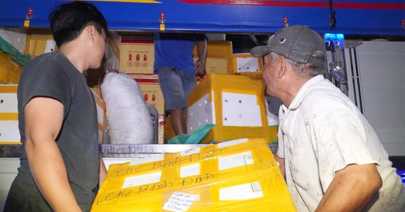
Mua nông thủy hải sản từ nông dân: Chứng minh nguồn gốc hàng hóa như thế nào? 🔗 MOI
Các thương lái nhỏ lẻ ở Cà Mau vận chuyển tôm cua đi TP.HCM - Ảnh: THANH HUYỀN Tuổi Trẻ giới thiệu ý kiến của chuyên gia, cơ quan chức năng, luật sư và người dân xung quanh vấn đề này. * Luật sư Nguyễ
Không có tiền xài, người đàn ông đột nhập nhà xưởng của người dân trộm 800 triệu đồng 🔗 MOI
Cơ quan công an làm việc với Nguyễn Văn Bon - Ảnh: Công an Vĩnh Long Ngày 17-5, thông tin từ Công an tỉnh Vĩnh Long cho biết đã khởi tố vụ án, khởi tố bị can và thi hành lệnh bắt tạm giam đối với Nguy
Phó Thủ tướng Thường trực kiểm tra tiến độ loạt dự án phục vụ APEC 2027 🔗 MOI
Chiều 16/5, Phó Thủ tướng Thường trực Chính phủ Phạm Gia Túc và đoàn công tác Chính phủ đã kiểm tra một số công trình trọng điểm phục vụ Hội nghị APEC 2027. Phó Thủ tướng Thường trực Chính phủ Phạm Gi
Đột phá phát triển khoa học, công nghệ và đổi mới sáng tạo: Rút ngắn khoảng cách giữa chính sách và thực tiễn 🔗 MOI
Nghị quyết Đại hội Đảng toàn quốc lần thứ XIV yêu cầu khẩn trương, quyết liệt đổi mới và hoàn thiện cơ chế, chính sách phát triển khoa học, công nghệ. Điều đó đòi hỏi các cấp, các ngành, nhất là ngành
Barca tái lập kỳ tích 66 năm sau chiến thắng trước Betis 🔗 MOI
Barcelona khép lại mùa giải La Liga trên sân nhà theo cách không thể ấn tượng hơn khi đánh bại Betis với tỷ số 3-1. Chiến thắng này giúp đội bóng xứ Catalonia tái lập kỳ tích từng xuất hiện từ mùa 195

Lịch thi đấu bóng đá hôm nay 17/5 🔗 MOI
Lịch thi đấu bóng đá hôm nay V-League 17:00 HAGL 0-2 Hà Tĩnh FPT Play, TV360+7 18:00 Nam Định 0-2 Thể Công Viettel FPT Play, VTV7, TV360 18:00 PVF-CAND 0-4 Hà Nội FPT Play, TV360+10 19:15 CAHN 2-0 Tha
Giải mã đà tăng nhóm cổ phiếu Vingroup 🔗 MOI
Quỹ đầu tư ngoại đẩy mạnh mua vào Chốt phiên cuối tuần qua, cổ phiếu (CP) VIC của Tập đoàn Vingroup đạt 228.000 đồng - giảm nhẹ so với mức kỷ lục sát 230.000 đồng một ngày trước đó. Tuy nhiên, đây vẫn
Giá bạc hôm nay 18/5/2026 rời xa mốc 80 triệu đồng/kg, tín hiệu xấu xuất hiện 🔗 MOI
Giá bạc trong nước hôm nay 18/5/2026 Khép lại tuần giao dịch vừa qua với những phiên biến động dữ dội, giá bạc miếng loại 1 lượng của Tập đoàn Vàng bạc Đá quý Phú Quý niêm yết ở mức 2,829-2,916 triệu
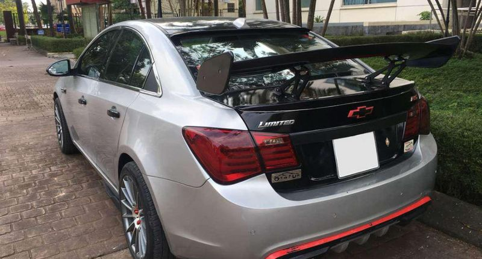
5 phụ kiện ô tô 'đốt tiền' mà chủ xe mới nên cân nhắc tránh mua 🔗 MOI
Dưới đây là 5 phụ kiện ô tô người mua xe mới nên cân nhắc bỏ qua nếu không muốn "ném tiền qua cửa sổ" được VietNamNet tổng hợp từ các ý kiến của người dùng trên các hội nhóm sử dụng xe. Dán phim PPF t
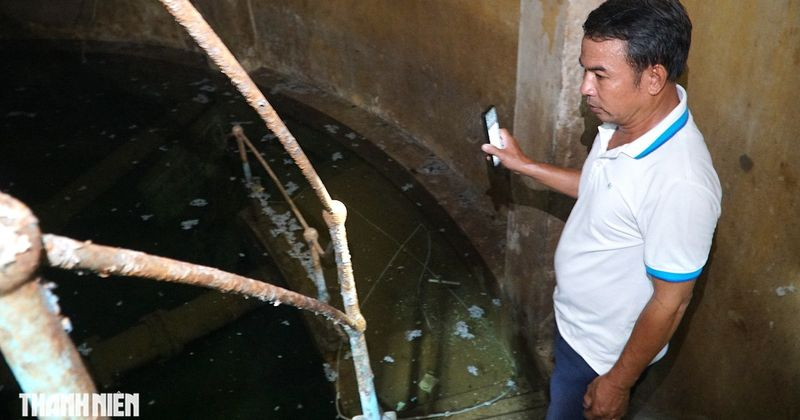
Giếng cổ 103 năm dưới công viên Gia Định, dấu tích hệ thống cấp nước Sài Gòn xưa 🔗 MOI
Công trình thuộc cụm giếng cạn Gò Vấp, được xây dựng năm 1923 do người Pháp đầu tư, xây dựng nhằm đáp ứng nhu cầu nước sinh hoạt ngày càng tăng của đô thị Sài Gòn - Gia Định đầu thế kỷ 20. Bên dưới tò

Kết quả bóng đá hôm nay 18/5 🔗 MOI
Kết quả bóng đá hôm nay NGÀY GIỜ TRẬN ĐẤU TRỰC TIẾP NGOẠI HẠNG ANH 2025/26 – VÒNG 37 17/05 18:30 Manchester Utd 3-2 Nottingham Forest FPT PLAY 17/05 21:00 Brentford 2-2 Crystal Palace FPT PLAY Everton
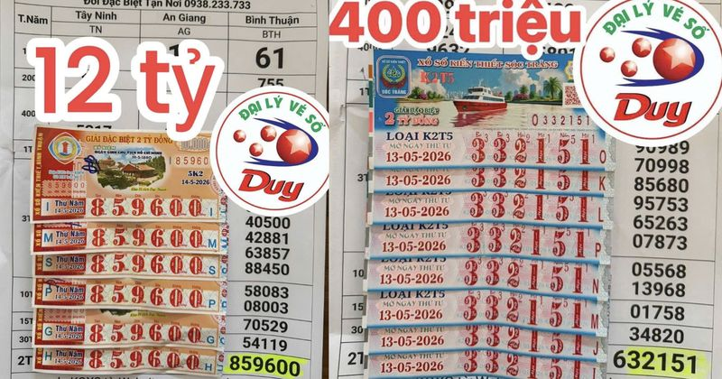
Vợ chồng bán vé số 'ôm' vé ế, vỡ òa trúng 4 tỉ xổ số miền Nam 🔗 MOI
Câu chuyện được anh Lưu Quốc Duy, chủ đại lý vé số Duy ở Vĩnh Long (Trà Vinh cũ) chia sẻ sau khi đã đổi thưởng 6 tờ vé số trúng độc đắc xổ số miền Nam cho 4 khách. Đại lý vé số Duy ở Vĩnh Long (Trà Vi
Những việc nên làm mỗi ngày giúp gan, thận khỏe 🔗 MOI
Gan giúp chuyển hóa chất dinh dưỡng, khử độc, còn thận lọc chất thải, điều hòa huyết áp, cân bằng nước - điện giải. Tuy nhiên, chế độ ăn nhiều thực phẩm chế biến sẵn, ít vận động, uống rượu bia hay mấ
Nhảy sạp lập kỷ lục trong đêm khai mạc Mùa du lịch Thái Nguyên 2026 🔗 MOI
Chương trình nhảy sạp cộng đồng do Sở Văn hóa, Thể thao và Du lịch Thái Nguyên tổ chức ngay trước lễ khai mạc tại quảng trường Võ Nguyên Giáp, phường Phan Đình Phùng. Sự kiện có 1.000 đôi sạp, trong đ
Giữa lúc VN-Index lập kỷ lục, Agriseco gọi tên 5 doanh nghiệp có tỷ suất cổ tức cao đáng chú ý 🔗 MOI
TIN MỚI Giữa lúc VN-Index liên tục lập kỷ lục mới, thị trường lại cho thấy sự phân hóa rõ nét. Chỉ số tăng mạnh nhưng đà tăng chủ yếu tập trung ở một số nhóm cổ phiếu vốn hóa lớn, khiến không ít nhà đ
12 đại học đẹp nổi tiếng nước Mỹ 🔗 MOI
1. Đại học Berry, bang Georgia. Đại học Berry là trường tư thục, chuyên về nghệ thuật tự do.
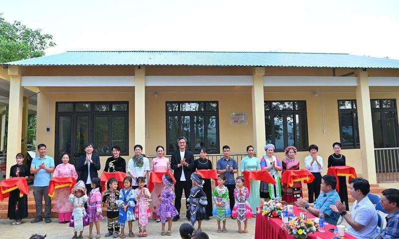
Quỹ Hy vọng bàn giao hai điểm trường mới 🔗 MOI
Các công trình được khánh thành, bàn giao ngày 15-16/5 gồm điểm trường Tả Lèng 1 - Trường Mầm non Pa Cheo, xã Bản Xèo, tỉnh Lào Cai và điểm trường Nà Ó - Trường Mầm non Thạch Lâm, xã Quảng Lâm, tỉnh C
687 cán bộ xã, phường TP.HCM hoàn thành tập huấn chuyên sâu về chuyển đổi số 🔗 MOI
Trao giấy khen cho những học viên có thành tích xuất sắc sau chương trình tập huấn - Ảnh: TRỌNG NHÂN Đây là 687 học viên đang trực tiếp làm công tác chuyển đổi số tại 173 tổ chức Đảng cấp trên cơ sở,
THPT chuyên Lê Quý Đôn Khánh Hòa quán quân cuộc thi học thuật liên tỉnh thành 🔗 MOI
Trường THPT chuyên Lê Quý Đôn (Khánh Hòa) giành giải quán quân Đường đến thành công năm 2026 - Ảnh: BTC Cuộc thi Đường đến thành công do Phân hiệu Trường đại học Giao thông vận tải tại TP.HCM tổ chức
Đại học Quốc gia Hà Nội: Sứ mệnh ươm dưỡng nhân tài phụng sự Tổ quốc 🔗 MOI
Sinh viên Trường đại học Công nghệ (Đại học Quốc gia Hà Nội) trong phòng thí nghiệm - Ảnh: UET Hôm qua 16-5, nhân lễ kỷ niệm 120 năm Ngày truyền thống Đại học Quốc gia Hà Nội (16-5-1906 - 16-5-2026),
Đại biểu Phạm Văn Hòa nói về đề xuất nợ thuế từ 1 triệu đồng có thể bị cấm xuất cảnh 🔗 MOI
Gửi bình luận Bình luận ( 0 ) Hiện chưa có bình luận nào, hãy là người đầu tiên bình luận Xem thêm bình luận
Bị báo lỗi vượt đèn đỏ nhưng do đèn bị lỗi, tài xế có bị xử phạt? 🔗 MOI
Một đoạn clip về đèn tín hiệu có dấu hiệu bị lỗi - Ảnh: CỤC CSGT Cục Cảnh sát giao thông (Bộ Công an) vừa có thông tin giải đáp thắc mắc của người dân trước tình trạng một số đèn tín hiệu giao thông b

Công cụ AI liên quan Anthropic tự ý xóa sạch dữ liệu của một doanh nghiệp trong 9 giây 🔗 MOI
Hành động phá hoại của công cụ lập trình AI đã khiến khách hàng của Công ty PocketOS rơi vào tình thế khó khăn - Ảnh TED HSU Báo Guardian đưa tin một công cụ lập trình vận hành bằng trí tuệ nhân tạo (

Báo cáo tài chính doanh nghiệp 🔗 MOI
Động lực tăng trưởng lợi nhuận của CEO chủ yếu đến từ việc cải thiện doanh thu, ngoài ra còn được đóng góp bởi lãi thoái vốn đầu tư vào công ty con.
Chân dung doanh nghiệp 🔗 MOI
ĐHĐCĐ thường niên 2026 của Sacombank ghi nhận nhiều nội dung lớn: cập nhật tiến độ tái cơ cấu, nợ xấu ở mức 5,01%, kế hoạch lợi nhuận thận trọng.

Chỉ đạo, quyết định của Chính phủ - Thủ tướng Chính phủ 🔗 MOI
17/05/2026 (Chinhphu.vn) - Phó Thủ tướng Chính phủ Hồ Quốc Dũng ký Quyết định số 23/2026/QĐ-TTg ngày 15/5/2026 ban hành Danh mục công nghệ cao được ưu tiên đầu... 17/05/2026 (Chinhphu.vn) - Chính phủ
Mạch nguồn văn hóa Hồ Chí Minh trong dòng chảy nửa thế kỷ - Bài 3: Dám nghĩ, dám làm, dám đột phá 🔗 MOI
Tiếp thêm động lực Những ngày này, các dây chuyền sản xuất trong nhà máy của Công ty TNHH Nidec Việt Nam (Khu Công nghệ cao TPHCM) đang tăng tốc để kịp các đơn hàng. Ở bộ phận hệ thống, việc quản lý t
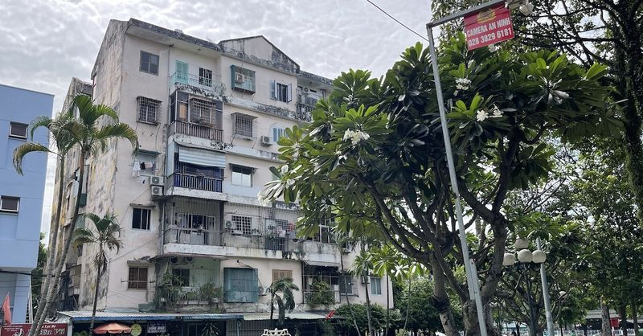
TPHCM siết cao tầng khu lõi, chung cư 30 năm tuổi giá lên tới 80 triệu đồng/m2 🔗 MOI
Chung cư cũ ngày càng đắt đỏ Tại buổi tiếp xúc cử tri sau kỳ họp thứ nhất Quốc hội khóa XVI mới đây, Bí thư Thành ủy TPHCM Trần Lưu Quang cho biết thành phố sẽ hạn chế phát triển thêm chung cư cao tần
Bác bỏ chiêu trò đánh tráo khái niệm hiện đại hóa quân đội 🔗 MOI
Trong bối cảnh thế giới và khu vực diễn biến nhanh, phức tạp, nhiệm vụ bảo vệ Tổ quốc đặt ra yêu cầu mới, cao hơn. Vì vậy, xây dựng Quân đội nhân dân Việt Nam cách mạng, chính quy, tinh nhuệ, hiện đại
Hồng Ngọc: 'Tôi chọn cách sống chậm' 🔗 MOI
Dịp chuẩn bị ra MV mới sau sáu năm im ắng, ca sĩ nói về cuộc sống, công việc ca hát tại Mỹ. - Cuộc sống hiện nay của chị như thế nào? - Tôi sống bình yên bên chồng và ba con tại Dallas, Texas. Ngoài đ
Thúc đẩy khởi nghiệp học đường 🔗 MOI
Triển khai Quyết định 1665/2017 của Thủ tướng Chính phủ về phê duyệt Đề án "Hỗ trợ học sinh, sinh viên khởi nghiệp đến năm 2025" (Đề án 1665), ngành giáo dục nhiều địa phương đã từng bước xây dựng nền
Kêu gọi chấm dứt cấm vận Cuba 🔗 MOI
Tuyên bố chung của Hội nghị nêu bật quan ngại về tình hình hiện nay ở Cuba , khẳng định sự ủng hộ của BRICS đối với sự nghiệp chủ quyền và công bằng xã hội của nước này. Tuyên bố cũng nhấn mạnh, Mỹ La
Cặp đôi Pháp - Việt kể chuyện đi xe đạp xuyên Âu - Á 🔗 MOI
"Từ nhà anh về nhà em" với sự tham gia của tác giả Thibault Clemenceau. "Từ nhà anh về nhà em" là cuốn du ký ghi lại hành trình đạp xe hơn 16.000 km xuyên Âu - Á của cặp đôi Pháp - Việt Thibault Cleme
🔗 MOI
Bức chân dung Sài Gòn - TP.HCM đã trở nên đầy đặn và sắc nét hơn từ khi có thêm những "nét vẽ" của nhà văn, nhà báo Phạm Công Luận , vốn được mệnh danh là "người giữ ký ức đô thị", cũng có thể nói là
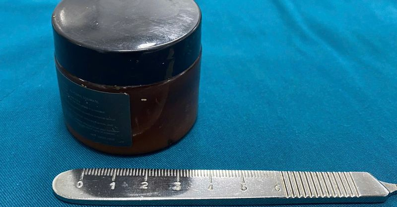
Cấp cứu nam bệnh nhân nhét hũ kem vào hậu môn 🔗 MOI
Hũ kem được lấy ra từ hậu môn của bệnh nhân - Ảnh: M.T. Ngày 17-5, lãnh đạo Bệnh viện Đa khoa Tiền Giang (tỉnh Đồng Tháp) cho biết bệnh viện vừa cấp cứu thành công một bệnh nhân có dị vật mắc kẹt tron
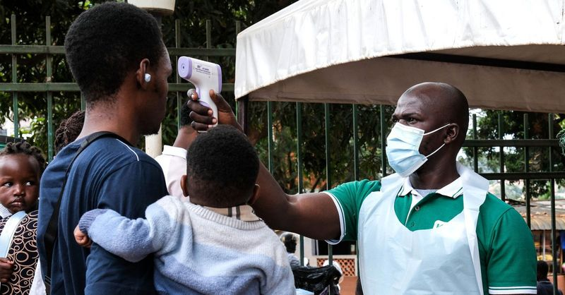
WHO ban bố cảnh báo y tế khẩn cấp quốc tế vì bùng dịch Ebola tại Congo, Uganda 🔗 MOI
Một nhân viên y tế đo thân nhiệt cho người dân trước Bệnh viện Hồi giáo Kibuli ở thủ đô Kampala, Uganda ngày 16-5, trong bối cảnh WHO ban bố tình trạng khẩn cấp quốc tế vì đợt bùng phát Ebola tại Ugan
Tác giả Ring qua đời, vòng tròn vẫn khép 🔗 MOI
Nhà văn Suzuki Koji cùng với Ringu sẽ luôn có một vị trí nhất định và ổn định trong văn hóa đại chúng - Ảnh: NYT Tin tức nhà văn Suzuki Koji qua đời khá lặng lẽ. Biển thông tin không ngừng xô những là
Công an và người dân rộn ràng thi giã bánh dày, nấu cỗ tại ngày hội 'Vì bình yên bản làng' 🔗 MOI
Đông đảo người dân, cán bộ chiến sĩ công an cùng tham gia các hoạt động tại ngày hội Vì bình yên bản làng - Ảnh: DANH TRỌNG Ngày 16-5, Cục Truyền thông Công an nhân dân phối hợp Công an tỉnh Sơn La cù
Xúc động chiến sĩ bám bản, bám làng 'Vì bình yên bản làng' tại Sơn La 🔗 MOI
Chương trình giao lưu nghệ thuật "Vì bình yên bản làng" quy tụ sự tham gia của nhiều ca sĩ, nghệ sĩ - Ảnh: CAND Tối 16-5, dù cơn mưa rào trút xuống, nhưng đông đảo người dân cùng cán bộ, chiến sĩ công

Ngoại tình bị phạt tiền: có làm người ta chung thủy hơn? 🔗 MOI
Minh họa: ĐẶNG HỒNG QUÂN H. - người em thân thiết - nói với tôi rằng: "Có những buổi tối mình không sợ cô đơn, mà sợ con mình hỏi: ba đâu?". Đó không phải chỉ là một câu hỏi, mà là một vết xước lặp đi

Coi chừng nhiễm liên cầu lợn vì thói quen ăn tiết canh, thịt tái 🔗 MOI

Làm thế nào để lên thực đơn dinh dưỡng cho gia đình nhiều thế hệ? 🔗 MOI

Khám tiền hôn nhân ở nam và nữ khác nhau như thế nào? 🔗 MOI

Sử dụng thuốc tăng cường sinh lý để kéo dài 'cuộc yêu', có nên không? 🔗 MOI

Chồng không tinh trùng nhưng vợ vẫn sinh được con 'chính chủ', vì sao? 🔗 MOI

Viêm da tiết bã ở trẻ em khác gì ở người lớn? 🔗 MOI

Xóa xăm có xóa được triệt để hay không? 🔗 MOI

6 dấu hiệu thầm lặng cảnh báo đột quỵ trước 1 tháng 🔗 MOI
Theo The Times of India, 6 dấu hiệu của cơ thể cảnh báo trước 1 tháng khi đột quỵ sắp xảy ra: 1. Chóng mặt bất thường Cảm giác chóng mặt thường được cho là do bỏ bữa, mất nước hoặc đứng dậy quá nhanh.
Công An Hà Nội đăng quang chức vô địch V-League 2025-2026 trước 3 vòng đấu 🔗 MOI
Các cầu thủ Công An Hà Nội ăn mừng chiến thắng trước Thanh Hóa để lên ngôi vô địch V-League 2025-2026 trước 3 vòng đấu - Ảnh: MINH ĐỖ Trước cơ hội lên ngôi vô địch sớm, Công An Hà Nội (CAHN) đã nhập c
Thể Công - Viettel tiến thêm một bước tới ngôi á quân V-League 🔗 MOI
Thể Công - Viettel tiến thêm một bước tới ngôi á quân V-League 2025 - 2026 - Ảnh: TCVT Tối 17-5, CLB Thể Công - Viettel làm khách Nam Định trên sân Thiên Trường. Tuy đã hết mục tiêu V-League nhưng đội
Man United thắng trận cầu 'đặc biệt' nhất mùa bóng 🔗 MOI
Bruno Fernandes ôm chia tay Casemiro - Ảnh: AP Cả Man United và Nottingham Forest đã hoàn thành các mục tiêu của họ ở mùa giải năm nay. Trong khi "quỷ đỏ" sớm giành vé dự Champions League 2026-2027 từ
Hoa hậu đẹp nhất thế giới mặc đầm của Lê Thanh Hòa ở Cannes 🔗 MOI
Hoa hậu đẹp nhất thế giới gây chú ý với đầm gam màu đen huyền bí tại Cannes 2026 - Ảnh: NVCC Năm nay, Hoa hậu Hòa bình Quốc tế - Miss Grand International 2022 Isabella Menin chọn thiết kế Black Orchid
Bản tin 30s Nóng: Diễn biến vụ nhóm đi xe Lexus đánh 2 cô gái; Bí ẩn 10 con đà điểu ở Tây Ninh 🔗 MOI
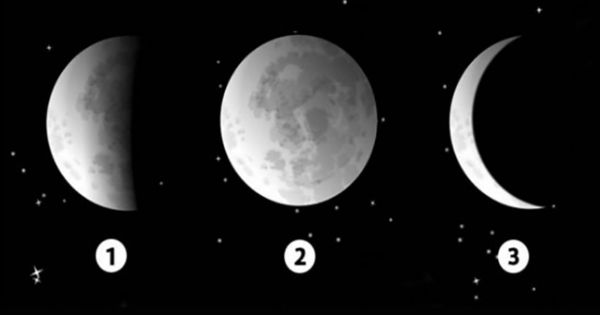
🔗 MOI
Mặt trăng nào trong hình thu hút bạn nhất? Điều đó sẽ tiết lộ bạn bị thu hút bởi kiểu người nào? - Mặt Trăng 1 Mặt Trăng 1 Bạn là người thực tế và quyết đoán, nhưng đôi khi điều đó khiến bạn đưa ra qu
Triệu tập thanh niên hành hung 'vợ hờ' dã man tại quán bida 🔗 MOI
CLB Hà Nội thắng đậm PVF-CAND, Đà Nẵng hưởng lợi 🔗 MOI
PVF-CAND không cản được Hà Nội ở vòng 23 - Ảnh: PVF Chủ nhà PVF-CAND quyết tâm giành điểm trong trận tiếp CLB Hà Nội. Bởi lẽ một ngày trước đó, CLB Đà Nẵng đã hòa 2-2 trên sân Bình Dương của CLB Công
WHO cảnh báo khẩn cấp vì bùng dịch Ebola: Bộ Y tế khuyến cáo gì? 🔗 MOI
WHO vừa phát đi cảnh báo về dịch sốt xuất huyết Ebola - Ảnh minh họa: AFP Cụ thể, theo thông báo của Tổ chức Y tế thế giới (WHO) ngày 17-5, dịch bệnh sốt xuất huyết do vi rút Ebola (gọi tắt là bệnh Eb
Vừa nhập cuộc MGI All Stars, Hương Giang được dự đoán đăng quang 🔗 MOI
Hoa hậu Hương Giang gây chú ý khi xuất hiện tại Thái Lan, dự thi MGI All Stars 2026 - Ảnh: FBNV Sau bao ngày mong đợi, ngày 17-5, hoa hậu Hương Giang đã có mặt tại Thái Lan, bắt đầu hành trình chinh p
CLB Công An Hà Nội ăn mừng cuồng nhiệt chức vô địch V-League sớm 🔗 MOI
Ngay sau khi Rogerio Alves (cởi áo) ghi bàn nâng tỉ số lên 2-0 cho CLB Công An Hà Nội trước Thanh Hóa phút 90+10, trọng tài thổi còi hết giờ. Các cầu thủ CLB Công An Hà Nội ăn mừng cuồng nhiệt khi vô

Hệ thống Bảo hiểm xã hội Việt Nam: Tăng tốc thực hiện các chỉ tiêu nhiệm vụ năm 2025 🔗 MOI
Theo Bảo hiểm xã hội (BHXH) TP. Hồ Chí Minh, mặc dù năm 2025 gặp một số khó khăn, tuy nhiên tập thể cán bộ viên chức, người lao động BHXH TP. Hồ Chí Minh quyết tâm hoàn thành vượt chỉ tiêu giao, với s
VTV Bình Điền Long An thắng đại kình địch ở giải bóng chuyền quốc tế 🔗 MOI
VTV Bình Điền Long An (áo xanh) giành chiến thắng cảm xúc trước Binh chủng Thông tin - Ảnh: ANH KHOA Đây chính là trận đại chiến lớn nhất tại vòng bảng giải đấu năm nay. Từ lâu, VTV Bình Điền Long An
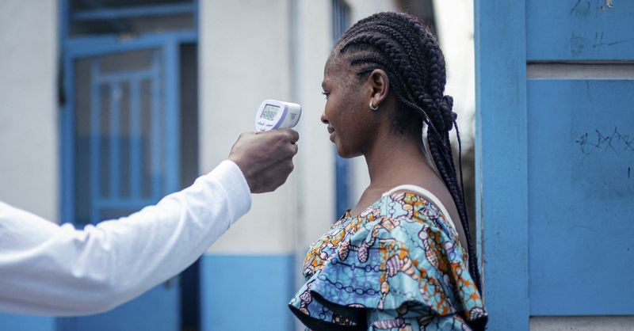
Tổng giám đốc WHO: 'Ebola ở CHDC Congo chưa đủ tiêu chí thành đại dịch' 🔗 MOI
Nhân viên y tế ở một bệnh viện tại thành phố Goma (CHDC Congo) kiểm tra nhiệt độ một khách thăm bệnh ngày 17-5 - Ảnh: AFP Theo Hãng tin Reuters, ngày 17-5, Tổng giám đốc Tổ chức Y tế thế giới (WHO) Te
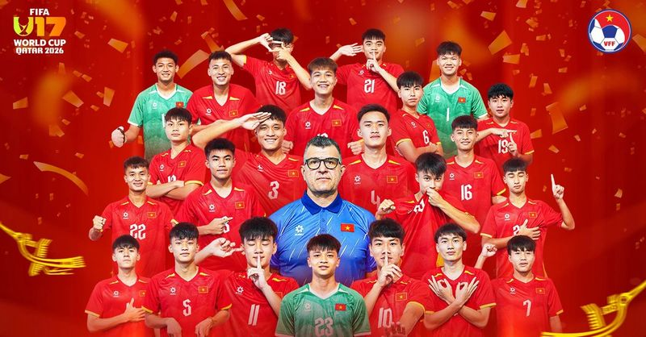
Chủ tịch AFC gửi thư chúc mừng U17 Việt Nam giành vé dự U17 World Cup 2026 🔗 MOI
Chủ tịch AFC gửi thư chúc mừng chiến tích của U17 Việt Nam Với chiến tích vào đến tứ kết Giải U17 châu Á 2026 , tuyển U17 Việt Nam dưới sự dẫn dắt của HLV Cristiano Roland đã lần đầu tiên trong lịch s
Trọng tài 'ngớ ngẩn' khiến Neymar xa rời vé dự World Cup 2026 🔗 MOI
Những phản ứng gay gắt của Neymar sau khi bị thay ra - Ảnh chụp màn hình Rạng sáng 18-5, Neymar cùng CLB Santos có trận gặp Coritiba ở Giải vô địch Brazil. Ngôi sao từng khoác áo Barcelona và PSG ra s
V-League 2025-2026 🔗 MOI
Phim Việt thất thủ khi Doraemon oanh tạc phòng vé 🔗 MOI
Sự xuất hiện của Doraemon Movie 45 chính thức khép lại chuỗi gần ba tháng phim Việt thống trị phòng vé nội địa - Ảnh: Toho Tuần vừa qua có đợt phát hành phim vào ngày 8-5 với những cái tên đáng chú ý
Ngũ cung của Việt Nam rất dân tộc mà cũng rất... trendy 🔗 MOI
Trong Hợp xướng Thanh La, mỗi cá nhân được khuyến khích tự trao cho mình cơ hội để hát hoặc chơi một nhạc cụ - Ảnh: BTC Đó là một trong những tiết mục của Hợp xướng Thanh La (Thanh La Choir) trong ngà
HLV CLB Công An Hà Nội lên tiếng vụ Đình Bắc và Alan tranh nhau đá phạt đền 🔗 MOI
Đình Bắc (bìa phải) lời qua tiếng lại với Alan Grafite (bìa trái) khi bị tranh đá phạt đền - Ảnh: MINH ĐỖ Tối 17-5, CLB Công An Hà Nội thắng Thanh Hóa 2-0 tại vòng 23 LPBank V-League 2025 - 2026, qua
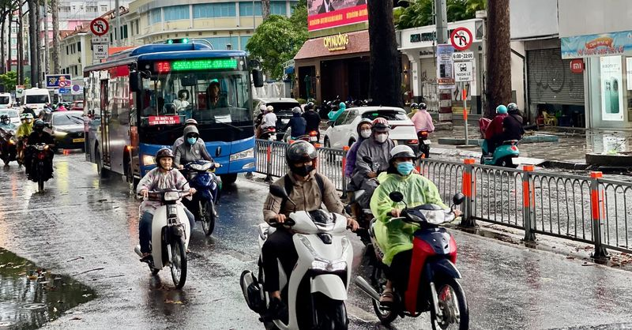
Thời tiết hôm nay 18-5: Cả nước có mưa, đề phòng sạt lở, ngập nước 🔗 MOI
Hôm nay 18-5, thời tiết cả nước có mưa - Ảnh: LÊ PHAN Trung tâm Dự báo khí tượng thủy văn quốc gia cho biết hôm nay 18-5, thời tiết khu vực Tây Bắc Bộ mưa rào và dông rải rác, có nơi mưa to. Đông Bắc
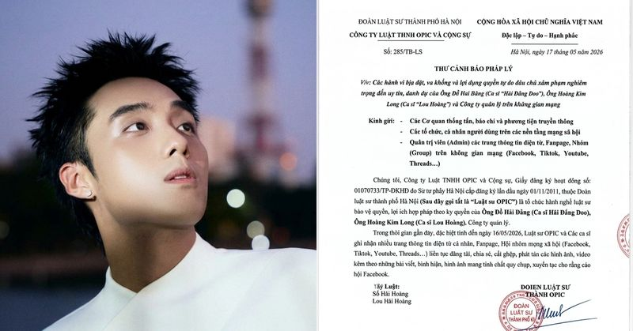
Hải Đăng Doo lên tiếng sau 10 ngày im lặng, phủ nhận sử dụng bóng cười 🔗 MOI
Ca sĩ Hải Đăng Doo cùng luật sư ủy quyền của anh chính thức lên tiếng vào tối 17-5 - Ảnh: FBNV Trong bài đăng dài trên trang cá nhân, Hải Đăng Doo gửi lời xin lỗi đến gia đình, công ty quản lý, đối tá

Nhật Bản ra mắt 'máy giặt người' trị giá 385.000 USD, làm sạch từ đầu đến chân trong 15 phút 🔗 MOI
Thống đốc Yoshimura Yoshifumi của tỉnh Osaka trải nghiệm máy giặt người Mirai - Ảnh: SISA COMMUNICATION YOUTUBE Theo trang Interesting Engineer ngày 30-11, Công ty Science Inc. của Nhật Bản vừa chính
Khởi tố cặp vợ chồng đưa hối lộ cán bộ địa chính để làm sổ đỏ trái quy định 🔗 MOI
Ông Hồng và bà Cúc tại Cơ quan cảnh sát điều tra Công an tỉnh Ninh Bình - Ảnh: HỒNG VIỆT Người bị khởi tố bị can, bắt tạm giam để điều tra hành vi đưa hối lộ là ông Bùi Xuân Hồng (50 tuổi, ở phường Tâ

Hoàn thiện khung khổ pháp lý về tiết kiệm 🔗 MOI
Pháp luật Trong công cuộc phòng, chống lãng phí hiện nay khó có thể tránh khỏi những khó khăn, nguy hiểm, ảnh hưởng tới người đấu tranh chống lãng phí. Do đó, việc bảo vệ người cung cấp thông tin phát
Cựu tướng 'Đá tảng', cánh tay phải của ông Duterte, bị truy lùng theo lệnh ICC 🔗 MOI
Thượng nghị sĩ Ronald Dela Rosa - Ảnh: EPA Ông Ronald Dela Rosa từng là cảnh sát trưởng quốc gia, đứng đầu thực thi chiến dịch chống ma túy dưới thời Tổng thống Rodrigo Duterte . Hồi tuần trước Tòa án

Cải cách tài chính công thúc đẩy tăng trưởng 🔗 MOI
Pháp luật Trong những năm qua, cùng với việc đẩy mạnh tiến trình xây dựng Nhà nước pháp quyền Việt Nam xã hội chủ nghĩa, công tác xây dựng và hoàn thiện hệ thống pháp luật đã đạt được nhiều thành tựu
Bỏ thi lớp 10 liệu có hết áp lực? 🔗 MOI
Học sinh tìm hiểu thông tin thi tuyển vào lớp 10 năm 2026 - Ảnh tư liệu Những người đề nghị bỏ thi đưa ra một thực trạng rất đáng suy ngẫm: nhiều học sinh học hành căng thẳng, phải luyện thi c
Công thức tính lương cán bộ, công chức khi tăng lương cơ sở lên 2,53 triệu từ 1-7 🔗 MOI
Công chức thực hiện thủ tục hành chính tại Trung tâm phục vụ hành chính công phường Đức Nhuận, TP.HCM - Ảnh: QUANG ĐỊNH Chính phủ đã ban hành Nghị định 161/2026, quy định tăng lương cơ sở với cán bộ,
Bảng lương chi tiết của quân đội khi tăng lương cơ sở lên 2,53 triệu đồng từ 1-7 🔗 MOI
Ảnh minh họa - Ảnh: NAM TRẦN Chính phủ đã ban hành Nghị định 161/2026 quy định mức lương cơ sở và chế độ tiền thưởng đối với cán bộ, công chức, viên chức và lực lượng vũ trang. Theo đó, mức lương cơ s
Tăng 8% lương hưu, lương và trợ cấp xã hội từ 1-7 lên mức tối thiểu từ 3,8 triệu/người/tháng 🔗 MOI
Điều chỉnh lương hưu và trợ cấp - Ảnh: HÀ QUÂN Nghị định này điều chỉnh mức lương hưu , trợ cấp bảo hiểm xã hội và trợ cấp hằng tháng đối với người hưởng lương hưu, trợ cấp trước ngày 1-7, bao gồm cán

CEO có quý lãi cao nhất 3 năm 🔗 MOI
Động lực tăng trưởng lợi nhuận của CEO chủ yếu đến từ việc cải thiện doanh thu, ngoài ra còn được đóng góp bởi lãi thoái vốn đầu tư vào công ty con. Trụ sở CEO Group tại Hà
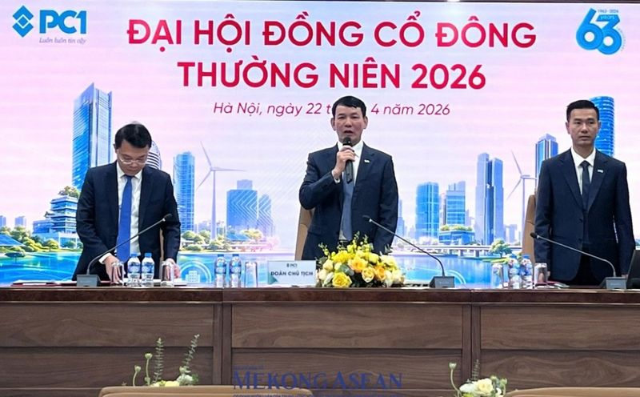
Tập đoàn PC1 thông tin về việc lãnh đạo bị khởi tố 🔗 MOI
Theo PC1, ông Trịnh Văn Tuấn - Chủ tịch HĐQT và 6 cá nhân khác là người nội bộ của công ty đã bị khởi tố, bắt tạm giam. Ông Trịnh Văn Tuấn - Chủ tịch Tập đoàn PC1 (giữa) tại ĐHĐCĐ thường niên năm 2026
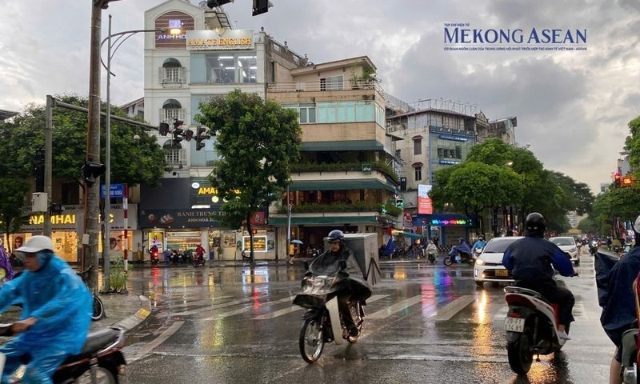
Bắc Bộ sắp đón mưa lớn, nắng nóng chấm dứt 🔗 MOI
Sau nhiều ngày nắng nóng, Bắc Bộ và Trung Bộ chuyển nhiều mây, nền nhiệt giảm dần, trong khi Nam Bộ bắt đầu bước vào mùa mưa. Ảnh minh họa: Hà Anh - Mekong ASEAN. Do ảnh hưởng của khối không khí bi
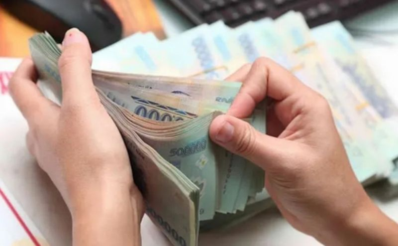
Chính thức tăng lương cơ sở, lương hưu và trợ cấp từ 1/7/2026 🔗 MOI
Từ ngày 1/7/2026, mức lương cơ sở sẽ tăng lên 2.530.000 đồng/tháng, đồng thời lương hưu và trợ cấp bảo hiểm xã hội, trợ cấp hàng tháng được điều chỉnh tăng thêm 8%. Ảnh minh họa. Chính phủ vừa ban hàn
bảng giá truyền thông 🔗 MOI

Thông cáo báo chí 🔗 MOI
Thông cáo báo chí 16/05/2026 (Chinhphu.vn) - Văn phòng Chính phủ vừa có Thông cáo báo chí chỉ đạo, điều hành của Chính phủ, Thủ tướng Chính phủ ngày 16/5/2026. 15/05/2026 (Chinhphu.vn) - Văn phòng Chí
'Ánh sáng Hồ Chí Minh soi đường cho chúng ta đi' 🔗 MOI
Nhân dịp kỷ niệm 136 năm ngày sinh Chủ tịch Hồ Chí Minh, Tổng Bí thư, Chủ tịch nước Tô Lâm đã có bài viết với tiêu đề "Ánh sáng Hồ Chí Minh soi đường cho chúng ta đi". Tổng Bí thư, Chủ tịch nước Tô Lâ
Tạo sự đột phá trong chăm sóc thể chất và dinh dưỡng cho trẻ em 🔗 MOI
Số liệu thống kê của Bộ Y tế , cho thấy: từ năm 2010 đến năm 2020, tỷ lệ suy dinh dưỡng thấp còi của trẻ dưới 5 tuổi ở Việt Nam giảm từ 29,3% xuống 19,6%, chuyển từ mức cao sang mức trung bình theo ph
Từ hình tượng lãnh tụ đến cảm hứng trong âm nhạc 🔗 MOI
Cũng như nhiều lĩnh vực nghệ thuật khác, âm nhạc Việt Nam đã sớm hòa vào dòng chảy cách mạng và dành những tình cảm đặc biệt cho Chủ tịch Hồ Chí Minh ngay từ những ngày đầu đất nước giành độc lập. Tro
Bài học quý của U-17 Việt Nam cho mục tiêu World Cup 🔗 MOI
(PLO)- Đội tuyển U-17 Việt Nam dừng bước sau thất bại 0-3 trước đối thủ lớn Úc ở tứ kết, nhưng hành trình tại Saudi Arabia vẫn khép lại bằng một cột mốc lịch sử. Các tuyển thủ U-17 Việt Nam đã dừng cu
Khơi thông nguồn lực phát triển văn hóa 🔗 MOI
Bên cạnh sự phấn khởi về một cơ chế tài chính hiệu quả hơn, điều mà giới chuyên môn và những người làm nghề kỳ vọng là từ đây sẽ góp phần hình thành nên thị trường văn hóa đúng nghĩa, nơi các ý tưởng
Người đi về từ khu vực có dịch Ebola tự theo dõi sức khỏe 21 ngày 🔗 MOI
Tối 17.5, Cục Phòng bệnh (Bộ Y tế) cho biết, cùng ngày Tổ chức Y tế thế giới (WHO) thông báo dịch bệnh sốt xuất huyết do virus Ebola (bệnh Ebola) do chủng Bundibugyo của virus Ebola tại Cộng hòa dân c
Barca tái lập kỳ tích toàn thắng sân nhà tại La Liga sau 66 năm 🔗 MOI
Tại Camp Nou hôm 17/5, Barca áp đảo và ghi ba bàn nhờ công Joao Cancelo cùng cú đúp của Raphinha. Betis chỉ ghi một bàn nhờ cú đá phạt đền của Isco. Raphinha mừng bàn trong trận Barca thắng Betis 3-1
NHÂN DÂN CUỐI TUẦN SỐ 1942 🔗 MOI
Báo Pháp Luật TP. Hồ Chí Minh 🔗 MOI
Vòng 23 V-League: CAHN đăng quang sớm, PVF-CAND trở lại chót bảng 🔗 MOI
Đ ội bóng sông Hàn tạm thời thoát chót bảng Trong trận đấu sớm tối 15-5, CLB Đà Nẵng nuôi hy vọng trụ hạng khi cầm chân Công an TP HCM. Ngay trên sân khách, đội bóng sông Hàn bất ngờ vươn lên dẫn trướ
VTV Bình Điền Long An và Hà Nội Tasco Auto vào bán kết 🔗 MOI
Trận cầu tâm điểm giữa VTV Bình Điền Long An và Binh chủng Thông tin - Binh đoàn 19 tối 17-5 đã mang đến bầu không khí sôi động tại Nhà thi đấu Tây Ninh với chất lượng chuyên môn cao cùng nhiều pha bó
Báo Nhân Dân số 25749 🔗 MOI
Báo Sài Gòn Giải Phóng ngày 18/5/2026 🔗 MOI
Triều Tiên triệu tập chỉ huy quân đội, tăng cường lực lượng biên giới phía Nam 🔗 MOI
Facebook Twitter Lưu bài viết Bản in Copy link Yonhap dẫn nguồn tin từ Hãng thông tấn trung ương Triều Tiên (KCNA) ngày 18/5 cho biết Nhà lãnh đạo Kim Jong Un hôm 17/5 đã triệu tập các chỉ huy sư đoàn
Chợ phiên vùng cao Lũng Vân nơi xứ Mường Phú Thọ 🔗 MOI
Facebook Twitter Lưu bài viết Bản in Copy link Giữa những dãy núi trập trùng của vùng cao Lũng Vân, có một phiên chợ nhỏ vẫn đều đặn họp mỗi tuần như suốt bao đời nay. Không ồn ào như những khu chợ du
Sinner vô địch Rome Open, lập kỳ tích Golden Masters 🔗 MOI
Highlights Jannik Sinner 2-1 Casper Ruud (nguồn: Tennis TV) Casper Ruud bước vào chung kết Rome Open với hành trang ấn tượng trên sân đất nện. Kể từ năm 2020, tay vợt Na Uy là người thắng nhiều trận v
Thời tiết ngày 18/5: Bắc Bộ mưa rất to, cảnh báo lũ quét, sạt lở đất 🔗 MOI
Facebook Twitter Lưu bài viết Bản in Copy link Theo Trung tâm Dự báo Khí tượng Thủy văn Quốc gia, dự báo ngày và đêm 18/5 khu vực Đông Bắc Bộ và Bắc Trung Bộ có mưa, mưa vừa và rải rác có dông với lượ
Học Bác qua những điều giản dị (*): Bền bỉ rèn luyện, cống hiến 🔗 MOI
Năm 1998, anh Kim Vĩnh Cường rời quê Bến Tre đến TPHCM làm việc. Đến nay, nam công nhân này đã có 28 năm gắn bó với Công ty TNHH PouYuen Việt Nam. Dấu mốc quan trọng trong đời Trong quá trình làm việc
Dự báo thời tiết 18/5/2026: Miền Bắc vẫn mưa giông sầm sập, đề phòng lốc, sét 🔗 MOI
Theo Trung tâm Dự báo khí tượng thủy văn quốc gia, ngày 18/5, khu vực Tây Bắc Bộ có mưa rào và giông rải rác, cục bộ có nơi mưa to; Đông Bắc Bộ có mưa, mưa vừa và rải rác có giông, cục bộ có nơi mưa t
Những dòng họ nhiều thế hệ đi theo Đảng 🔗 MOI
Lời tòa soạn: Từ một chi bộ nhỏ ra đời bên dòng sông Giăng năm 1931, tổ chức Đảng ở miền tây Nghệ An đã trải qua hành trình 95 năm bám bản, bám dân, gieo niềm tin giữa đại ngàn. Đó cũng là quãng thời
Mỡ máu cao tàn phá thận thế nào 🔗 MOI
ThS.BS Phạm Thị Mộng Đào, Trưởng khoa Thận Nhân tạo, Bệnh viện Gia An 115, cho biết mỡ máu cao không chỉ gây hại cho hệ tim mạch mà còn ảnh hưởng đáng kể đến chức năng thận, nhất là khi kèm các rối lo
Đua săn hàng giảm giá, nhiều gia đình trẻ rơi vào cảnh 'tiết kiệm giả' 🔗 MOI
Chị Nguyễn Thị Thu Hường (35 tuổi, nhân viên văn phòng tại Hà Nội) có thu nhập khoảng 22 triệu đồng/tháng. Để tối ưu chi tiêu, chị duy trì thói quen săn hàng giảm giá gần như mỗi ngày. Trung bình mỗi
[Video] Dự báo thời tiết ngày 18/5/2026: Bắc Bộ mưa dông diện rộng, Nam Bộ giảm nhiệt 🔗 MOI
Ngày mới hôm nay, thời tiết cả nước có nhiều thay đổi đáng chú ý khi mưa dông gia tăng tại miền Bắc và nền nhiệt ở nhiều khu vực bắt đầu giảm xuống. Tại Bắc Bộ, do tác động của vùng hội tụ gió trên ca
Tái cấu trúc toàn diện mạng lưới giáo dục 🔗 MOI
Chiến lược “từ ngoài vào trong” Với mục tiêu tinh gọn bộ máy, nâng cao hiệu quả hoạt động, ngành giáo dục đang đứng trước “phép thử” lớn nhất trong thập kỉ: Làm thế nào để sáp nhập mà không gây xáo tr
WHO: Đợt bùng phát virus Hanta ở mức "nguy cơ thấp" 🔗 MOI
Facebook Twitter Lưu bài viết Bản in Copy link Tổ chức Y tế Thế giới (WHO) ngày 17/5 tuyên bố vẫn giữ nguyên đánh giá đợt bùng phát virus Hanta ở mức "nguy cơ thấp" khi con tàu du lịch khởi phát dịch
Lễ hội Làng Sen năm 2026 có những hoạt động gì? 🔗 MOI
Facebook Twitter Lưu bài viết Bản in Copy link Lễ hội Làng Sen là hoạt động văn hóa, chính trị có ý nghĩa sâu sắc nhằm tưởng nhớ, tri ân công lao to lớn của Chủ tịch Hồ Chí Minh; đồng thời góp phần tu
Quân đội Israel cảnh báo về nguy cơ thiếu hụt nhân lực 🔗 MOI
Facebook Twitter Lưu bài viết Bản in Copy link Ngày 17/5, Lực lượng Phòng vệ Israel (IDF) cảnh báo quân đội nước này đang thiếu khoảng 12.000 binh sỹ thường trực, trong đó có khoảng 7.000 quân nhân ch
Sức sống của nhạc phẩm viết về Bác 🔗 MOI
Ðiểm nhấn trong concert quốc gia Hiếm có một vĩ nhân, một lãnh tụ nào trở thành nguồn cảm hứng bất tận cho văn nghệ sĩ như Chủ tịch Hồ Chí Minh. Riêng mảng ca khúc viết về Bác cũng khó thống kê chính
Trương Vĩnh Ký cùng các tiên sinh đồng tâm hiệp lực 🔗 MOI
Trương Vĩnh Ký là con người của Nho học, muốn lấy giá trị đạo đức của Khổng Mạnh răn dạy thế hệ trẻ. Tưởng cũng nên nhắc lại chuyện bác sĩ Léon Gautier có gặp Trương Vĩnh Ký nhân dịp ông sang Pháp the

Đẳng cấp thật sự 🔗 MOI
- Thong dong cũng chỉ là cái vỏ bên ngoài. Nhìn láng o, nhưng chỉ một chút va quệt, trong cách cư xử lại “trầy xước hình ảnh”. Ngồi ghế êm mà để cái tôi xóc nảy, thiệt uổng.
Sân chơi phong trào thúc đẩy phát triển đỉnh cao 🔗 MOI
Nhiều màn tranh tài hấp dẫn tại Cúp bóng chuyền Thiên Tân 2026. Ảnh: DŨNG PHƯƠNG Trong bối cảnh thể thao học đường ngày càng được chú trọng tại TPHCM, bóng chuyền tiếp tục khẳng định vị thế là môn thể
Hiến kế giảm gánh nặng cho học sinh 🔗 MOI
Có ý kiến cho rằng nên bỏ kỳ thi tuyển sinh lớp 10 nhằm "cởi trói" cho học sinh khỏi cuộc đua chuyển cấp khốc liệt và giảm áp lực tâm lý nặng nề ở tuổi 15; giúp tiết kiệm nguồn lực tài chính, thời gia
Những người giữ lửa 'Không gian văn hóa Hồ Chí Minh' 🔗 MOI
Không gian văn hóa Hồ Chí Minh ở các gia đình, khu phố đang lặng lẽ lan tỏa thói quen đọc, tìm hiểu các tư liệu về Bác Hồ. Dành riêng một phòng làm “Không gian văn hóa Hồ Chí Minh” Phía sau cánh cửa n
Thịt heo chết, mì hóa chất, đồ hộp nhiễm bệnh: Người dân còn biết tin vào đâu? 🔗 MOI
(PLO)- Hàng loạt vụ thịt heo chết, mì chứa chất cấm, thực phẩm làm từ thịt nhiễm bệnh… được phanh phui; người tiêu dùng hoang mang vì thực phẩm bẩn đang len sâu vào từng bữa ăn. Từ những con heo chết
Lời cảnh tỉnh cần thiết từ U17 Việt Nam 🔗 MOI
Điều quan trọng nhất hiện nay không phải là việc soi xét U17 Việt Nam mạnh đến đâu, mà là bóng đá Việt Nam (BĐVN) sẽ làm gì tiếp theo với thế hệ này. Khoảng cách còn xa U17 Việt Nam đã tạo nên một tro
Thu nhập tiền tỉ từ mô hình nuôi cá chình 🔗 MOI
Ông Nguyễn Hữu Ánh (ngụ phường Tân Thành, tỉnh Cà Mau), người nhiều năm liền được vinh danh Nông dân Việt Nam xuất sắc, cho biết gia đình vừa "bỏ túi" hơn 1,2 tỉ đồng sau khi thu hoạch cá chình từ 2 a

Tinh hoa không thể chỉ đo thành tích học tập, phải kiểm chứng bằng cống hiến 🔗 MOI
Bài viết dưới đây là chia sẻ của Nhà báo Lê Quốc Minh, Ủy viên Trung ương Đảng, Phó Trưởng ban Tuyên giáo và Dân vận Trung ương, Tổng biên tập Báo Nhân Dân trong Kỷ yếu hội thảo khoa học quốc gia "Từ

Lạ lùng sợ uống thuốc nhưng nghiện thực phẩm chức năng 🔗 MOI
Choáng với 'dàn vệ sĩ sức khỏe' Mới đây, một tài khoản Facebook thu hút sự chú ý khi chia sẻ “dàn vệ sĩ sức khỏe" gồm gần chục loại thực phẩm chức năng và gọi đó là bí quyết “trường sinh bất lão”. Dan
4 loại trà tốt nhất nên uống trong mùa hè oi bức 🔗 MOI
Trao đổi với PV VietNamNet, Thạc sĩ, bác sĩ Hoàng Vũ Long, Trưởng phòng Đào tạo Nghiên cứu khoa học Chỉ đạo tuyến, Bệnh viện Y học cổ truyền Hà Nội cho biết, theo học thuyết ngũ hành, “hỏa khắc kim”,
Hình ảnh di dời khẩn cấp các hộ dân sống tại chung cư chờ sập ở ‘siêu phường’ 🔗 MOI
Phường Nam Định có quy mô dân số gần 190.000 người, thuộc nhóm 10 phường đông dân nhất cả nước. Giữa “siêu phường” ấy vẫn tồn tại 29 khu chung cư cũ xuống cấp nghiêm trọng. Trong đó chung cư cũ số 181
Những sứ giả hòa bình lan tỏa khát vọng nhân văn của Bác ở Phi châu 🔗 MOI
Sinh thời, Chủ tịch Hồ Chí Minh từng dạy “Tinh thần yêu nước và tinh thần quốc tế liên hệ khăng khít với nhau. Vì lẽ đó, ta vừa ra sức kháng chiến, vừa tham gia phong trào ủng hộ hòa bình thế giới” vớ

Tử vi ngày 18 tháng 5: Con giáp nào may mắn hôm nay? 🔗 MOI
Tuổi Tí trong tử vi ngày 18 tháng 5 có thể gặp một thay đổi nhỏ liên quan đến lịch trình cá nhân. Ban đầu bạn hơi khó chịu nhưng càng về sau lại nhận ra sự thay đổi này có lợi cho mình. Tài lộc ổn địn
Campuchia được xếp hạng đứng đầu thế giới về môi trường tự nhiên năm 2026 🔗 MOI
Facebook Twitter Lưu bài viết Bản in Copy link Campuchia vừa được công ty truyền thông U.S. News & World Report xếp hạng là quốc gia đứng đầu thế giới về môi trường tự nhiên năm 2026. Việc Campuchia đ
U17 Việt Nam: Những tín hiệu vui sau khi dừng bước ở giải châu Á 🔗 MOI
Xuất sắc hoàn thành nhiệm vụ Hành trình của U17 Việt Nam tại VCK U17 châu Á 2026 khép lại ở tứ kết sau thất bại trước U17 Australia, một kết quả không bất ngờ nếu đặt lên bàn cân về thể hình, tốc độ,
WHO ban bố tình trạng khẩn cấp quốc tế về dịch Ebola 🔗 MOI
AFP hôm qua 17.5 dẫn thông báo ngày 16.5 từ Trung tâm Kiểm soát và phòng ngừa dịch bệnh châu Phi (CDC Africa) cho hay đợt bùng phát dịch Ebola mới do chủng vi rút Bundibugyo ở CHDC Congo đã khiến 88 n
Bí ẩn rặng đá đứng Carnac – nơi thời gian hóa thành những hàng quân bất tận 🔗 MOI
Facebook Twitter Lưu bài viết Bản in Copy link Giữa vùng Bretagne lộng gió ở phía Tây nước Pháp, có một nơi mà thời gian dường như ngừng trôi. Trên những cánh đồng rộng mở của thị trấn Carnac, hàng ng
Trúng xổ số miền Nam, nhiều người ở TPHCM, Tây Ninh và Cà Mau đổi thưởng ngay 🔗 MOI
Sáng 18-5, sau khi kết quả xổ số miền Nam được công bố, các đại lý vé số đã tìm ra nhiều khách hàng ở TPHCM, Tây Ninh và Cà Mau trúng giải an ủi vé số của 3 đài là Kiên Giang, Tiền Giang và Đà Lạt. Kế
V-League 2025-2026: CLB Công an Hà Nội vô địch trước 3 vòng đấu 🔗 MOI
Niềm vui lớn của HLV Polking Trước trận đấu giữa CLB Công an Hà Nội (CAHN) và Thanh Hóa, CLB Thể Công Viettel đã giành chiến thắng 2-0 trên sân Nam Định, nên muốn sớm vô địch, đội bóng ngành công an p
Bắt cặp vợ chồng đưa hối lộ cho cán bộ xã 🔗 MOI
Ngày 17-5, tin từ Công an tỉnh Ninh Bình cho biết Cơ quan Cảnh sát điều tra Công an tỉnh này vừa ra quyết định khởi tố bị can, bắt tạm giam Bùi Xuân Hồng (SN 1976, ngụ phố Tây, phường Tây Hoa Lư, tỉnh
Man City trở lại đường đua 🔗 MOI
Màn hồi sinh mạnh mẽ Cho đến sau kỳ nghỉ đông, Man City vẫn lửng lơ giữa hiện thực nghiệt ngã và vô vàn hoài nghi về chính mình. Đội bóng của Pep Guardiola đánh mất sự ổn định quen thuộc, sau đó bị lo
Đi làm thuê, về làm chủ 🔗 MOI
Thực hiện phương châm "Đi làm thuê, về làm chủ", thời gian qua, Đồng Tháp đã thiết thực hỗ trợ người lao động (NLĐ) trước, trong và sau khi làm việc ở nước ngoài. Tỉnh thường xuyên ký kết hợp tác với
Bách Hóa Xanh chính thức mốc 3.000 cửa hàng, tốc độ mở mới “chóng mặt” 🔗 MOI
MWG: Giá hiện tại Thay đổi Xem hồ sơ doanh nghiệp TIN MỚI Theo cập nhật trên website bachhoaxanh.com, chuỗi bán lẻ thực phẩm thuộc Đầu tư Thế Giới Di Động (mã MWG) đã đạt mốc 3.010 cửa hàng. Từ đầu nă

Google ra mắt Gemma 4, AI chạy offline trên thiết bị cá nhân 🔗 MOI
Gemma 4 chạy trực tiếp trên thiết bị cá nhân - Ảnh: THOMAS FULLER Trong bối cảnh trí tuệ nhân tạo vẫn phụ thuộc vào hạ tầng đám mây, việc một mô hình có thể hoạt động trực tiếp trên thiết bị cá nhân đ
Nghiên cứu phát hiện cách cà phê bảo vệ cơ thể khỏi nhiều bệnh mạn tính 🔗 MOI
Từ lâu, các nghiên cứu đã chỉ ra rằng tiêu thụ cà phê khoa học giúp kéo dài tuổi thọ , giảm nguy cơ mắc các bệnh mạn tính, nhưng cơ chế chính xác tạo nên lợi ích vượt trội của cà phê vẫn chưa rõ ràng.
Chuyên gia: VN-Index sớm tiến đến mốc 2.000 điểm 🔗 MOI
TIN MỚI VN-Index vừa thiết lập đỉnh lịch sử mới, nhưng cảm giác hưng phấn trên thị trường lại không lan tỏa mạnh như những lần vượt đỉnh trước. Thanh khoản chưa thực sự bùng nổ, khối ngoại vẫn duy trì
Những nghề phổ biến thời bao cấp qua ảnh tư liệu 🔗 MOI
Hơn 50 năm trôi qua nhưng câu chuyện của thời bao cấp luôn để lại nhiều cảm xúc cho những người đã sống ở giai đoạn đó. Trên một số nhóm tổng hợp tư liệu xưa, các hình ảnh về giai đoạn này thường được
McGregor tái xuất UFC sau 5 năm 🔗 MOI
Chủ tịch UFC Dana White công bố thông tin này hôm 16/5 trong sự kiện MMA đầu tiên của MVP phát sóng trên Netflix. Trận đấu giữa McGregor và Holloway sẽ diễn ra ở hạng bán trung (welterweight), thuộc t
U.17 Việt Nam đủ sức thăng hoa ở World Cup 🔗 MOI
U.17 Việt Nam có thể ngẩng cao đầu Hành trình của U.17 Việt Nam ở giải châu Á đã khép lại sau thất bại 0-3 trước U.17 Úc (rạng sáng 17.5). Đoàn quân trẻ của HLV Cristiano Roland thua tâm phục khẩu phụ

5 ngày đếm ngược đến Triển lãm VietAd 2026 - Hà Nội 🔗 MOI
Triển lãm VietAd 2026 đem đến những trải nghiệm công nghệ cho khách tham quan. - Ảnh: Ban Tổ chức Nơi hội tụ công nghệ số và kết nối toàn cầu Với xu hướng tái cấu trúc mạnh mẽ của các chuỗi cung ứng c
Người cho thuê nhà đất nộp thuế thu nhập cá nhân ra sao theo quy định mới? 🔗 MOI
Hộ kinh doanh có doanh thu trên 1 tỉ đồng mới phải đóng thuế - Ảnh: HỮU HẠNH Nghị định 141 ban hành cuối tháng 4-2026, quy định doanh thu của hộ gia đình, cá nhân kinh doanh có doanh thu trên 1 tỉ đồn
Quần thể Di sản văn hóa thế giới Yên Tử, Kiếp Bạc thu hút đông đảo du khách 🔗 MOI
Tại Quảng Ninh, trong 4 tháng đầu năm 2026, Khu Di tích danh thắng Yên Tử đón hơn 1 triệu lượt khách, tăng 122,6% so với cùng kỳ năm trước; di tích Bạch Đằng tăng 141%. Tại Bắc Ninh, chùa Bổ Đà tăng 8
Người đau khớp gối có nên đi bộ mỗi ngày? 🔗 MOI
Người đau khớp gối có thể vận động vừa sức Đi bộ nhẹ nhàng giúp bôi trơn khớp, tăng sức mạnh cơ quanh gối Nếu đầu gối sưng, đau dữ dội, nên đi khám sớm thay vì cố vận động Trong khi đó, cũng có người
WHO cảnh báo về dịch Ebola 🔗 MOI
Tổng Giám đốc Tổ chức Y tế thế giới (WHO) Tedros Adhanom Ghebreyesus ngày 17-5 tuyên bố dịch Ebola ở Cộng hòa Dân chủ (CHDC) Congo và Uganda là "tình trạng khẩn cấp y tế công cộng gây quan ngại quốc t
Lan tỏa mạnh mẽ giá trị văn hóa, tư tưởng Hồ Chí Minh 🔗 MOI
Bí thư Đảng ủy, Chủ tịch HĐND phường Bến Thành Hoàng Thị Tố Nga cho biết đây là công trình tâm huyết của Đảng bộ phường nhằm ứng dụng chuyển đổi số vào công tác giáo dục chính trị, tư tưởng. "Sổ tay n
Người mẹ cùng con chiến đấu với bệnh hiếm 🔗 MOI
Vy Anh, con gái chị Ngọc Quyên, ở quận 12, phát bệnh từ những tháng đầu đời. Khi mới sinh năm 2020, bé thường thè lưỡi do phì đại cơ lưỡi, kèm thông liên thất và vàng da. Đến tháng thứ ba, bác sĩ phát

CMC OpenAI phát triển mô hình AI pháp lý tiếng Việt 🔗 MOI
Bộ chuẩn đánh giá VLegal - Bench của nhóm nghiên cứu C-OpenAI đăng ký trên cổng arXiv của Trường đại học Cornell - Mỹ phiên bản mới nhất cập nhật ngày 25-12-2025. CMC OpenAI , công t

Vì sao càng dùng điện thoại, bạn càng khó ngủ? 🔗 MOI
Ánh sáng xanh từ điện thoại khiến não bộ “tỉnh táo giả” vào ban đêm Mỗi tối, hàng triệu người cầm điện thoại lên giường với suy nghĩ chỉ lướt vài phút trước khi ngủ. Nhưng thực tế, chính ánh sáng phát

Hoạt động của Lãnh đạo Bộ Tài chính 🔗 MOI
Theo yêu cầu của Thủ tướng, lãnh đạo Bộ, ngành, địa phương phải chỉ đạo hoàn thành việc xử lý các cơ sở nhà, đất dôi dư sau sáp nhập trước ngày 25/5, không để tình trạng hư hỏng, xuống cấp, lãng phí.
Nghiên cứu thị trường 🔗 MOI
9 tháng đầu năm 2025, CPI tăng 3,27%, lạm phát cơ bản tăng 3,19%, Cục Thống kê đánh giá lạm phát 'đang trong tầm kiểm soát'.
Câu chuyện thương trường 🔗 MOI
Các dự án tập trung vào các lĩnh vực công nghiệp, hạ tầng, xử lý rác thải, thiết bị y tế, vật tư sản xuất nông nghiệp, may mặc, thương mại, dịch vụ tổng hợp, chế biến nông sản.

Từ 15-5, tiết lộ giới tính thai nhi sẽ nhận mức phạt 7-15 triệu đồng 🔗 MOI
Nghị định 90 của Chính phủ có hiệu lực từ ngày 15-5, đã chỉnh sửa, bổ sung nhiều nội dung về hành vi vi phạm hành chính trong lĩnh vực dân số, đặc biệt siết chặt các hành vi liên quan lựa chọn giới tí

'Học đến khi tan đá' đang hút giới trẻ 🔗 MOI
"Học đến khi tan đá" đang trở thành trào lưu cuốn hút nhiều bạn trẻ trên mạng xã hội - Ảnh chụp màn hình Bỏ điện thoại xuống, tập trung "học đến khi tan đá" Người tham gia thử thách sẽ để một cục đá l

AirSnitch có thể chặn và theo dõi dữ liệu WiFi mà không cần mật khẩu 🔗 MOI
Nguy cơ nghe lén từ bên trong một mạng WiFi nội bộ - Ảnh: EZONE.HK Một kỹ thuật tấn công mới mang tên AirSnitch cho thấy WiFi có mật khẩu mạnh chưa chắc đã an toàn tuyệt đối. Dữ liệu người dùng vẫn có

ChatGPT giảm lỗi chữ méo, sai chính tả khi tạo ảnh 🔗 MOI
Giờ đây ChatGPT đã có thể tạo chữ trong ảnh chính xác hơn - Ảnh: REUTERS Trước đây, các công cụ AI tạo ảnh dù rất mạnh về hình ảnh nhưng lại gặp khó khăn khi xử lý chữ. Những lỗi như sai chính tả, biế

Code do AI viết nhanh hơn, nhưng lỗi nhiều gấp 1,7 lần con người 🔗 MOI
AI chuyển hóa từ ý tưởng sang sourcecode nhanh nhưng chưa tinh Nghiên cứu mới nhất từ CodeRabbit (một công cụ đánh giá mã nguồn phổ biến) chỉ ra rằng mã nguồn do AI tạo ra có tỉ lệ lỗi cao gấp 1,7 lần
Em trai không chịu phân chia di sản, phải làm sao? 🔗 MOI
Vậy tôi và anh trai có thể làm đồng sở hữu căn nhà mà không cần sự có mặt của em tôi được không? Luật sư Nguyễn Trọng Dần - Luật sư Nguyễn Trọng Dần (Đoàn luật sư TP.HCM) trả lời: Việc bạn và

Tổng Bí thư, Chủ tịch nước Tô Lâm mong người Việt tại Sri Lanka phát huy bản sắc văn hóa dân tộc 🔗 MOI
Tổng Bí thư, Chủ tịch nước Tô Lâm gặp gỡ cán bộ cơ quan đại diện và cộng đồng người Việt Nam tại Sri Lanka - Ảnh: TTXVN Tại cuộc gặp, Tổng Bí thư, Chủ tịch nước Tô Lâm trò chuyện thân mật và thông báo
VIDEO: Người dân TPHCM đổ xô trải nghiệm buffet sầu riêng cuối tuần 🔗 MOI
Chiều 17-5, khu vực buffet sầu riêng tại một siêu thị ở phường An Lạc (TPHCM) liên tục đông khách. Các gia đình, nhóm bạn trẻ tranh thủ thưởng thức sầu riêng trong không gian máy lạnh giữa thời tiết o
Thắng Nottingham Forest, Man United về đích thứ ba Ngoại hạng Anh 🔗 MOI
Man United tiếp đón Nottingham Forest tại sân nhà với mục tiêu không thua để chắc chắn kết thúc mùa giải trong 3 vị trí dẫn đầu Ngoại hạng Anh. Tuy nhiên, "Quỷ đỏ" còn làm được nhiều hơn thế bằng chiế
Thường xuyên thức giấc ban đêm cảnh báo điều gì? 🔗 MOI
Thức dậy giữa đêm rồi trằn trọc khó ngủ lại là tình trạng nhiều người gặp phải, đôi khi là bình thường, đặc biệt khi tuổi tác tăng lên. Tuy nhiên, nếu tình trạng này xảy ra thường xuyên và ảnh hưởng c

Siri có thể tích hợp ChatGPT, Gemini trên iOS 27 🔗 MOI
Người dùng có thể sớm được tự do lựa chọn "bộ não" AI cho Siri ngay trên giao diện iOS 27 Apple đang thử nghiệm một thay đổi đáng chú ý với Siri, khi cân nhắc cho phép tích hợp các mô hình AI bên ngoà

Những điểm check-in ở Nha Trang 'nổi rần rần trên mạng' 🔗 MOI
Bờ kè xóm Chụt đặc biệt thu hút giới trẻ đến check-in trong thời gian gần đây - Ảnh: TRẦN HOÀI Bên cạnh những điểm đến, các khu du lịch vốn đã nổi tiếng, nhiều điểm check-in miễn phí hoặc với chi phí

Kỳ tích 2 bé sinh đôi chào đời cách nhau 13 tuần 🔗 MOI
Cha mẹ và em bé thứ 2 trong cặp song sinh - Ảnh: BVCC Theo ông Hưng, cha mẹ của bé (36 và 32 tuổi) đã mong con 5 năm mà chưa được toại nguyện, lần này mẹ bé mang thai đôi nhờ hỗ trợ sinh sản (IVF). Đế

Nhiệt độ đại dương tiến sát mức kỷ lục, lo ngại siêu El Nino trở lại 🔗 MOI
El Nino làm thay đổi mô hình thời tiết toàn cầu, gây ra hạn hán, mưa lớn, bão mạnh và nhiều cực đoan khí hậu khác ở nhiều khu vực trên thế giới - Ảnh: Cefas Giới nghiên cứu cho rằng nếu El Nino mạnh t

Vinhomes Green Paradise Cần Giờ khiến TP.HCM ‘mơ lớn' về du lịch thể thao, tại sao không? 🔗 MOI
Khoảng 5.000 runner đổ về Cần Giờ đi race VnExpress Marathon Green Paradise Cần Giờ - Ảnh: QUANG ĐỊNH Khởi công từ 19-4 năm ngoái, tới ngày 1-5, đại lộ Tương Lai - Thời Đại rộng, thẳng tắp thuộc dự án
Không thể giao trẻ em cho mạng xã hội: Khó kéo trẻ khỏi mạng nếu đời thực quá nghèo nàn 🔗 MOI
Sách, thể thao và nghệ thuật có thể giúp trẻ tìm lại khả năng tập trung, cảm xúc và kết nối ngoài đời thực - Ảnh: QUANG ĐỊNH Gần đây, nhiều quốc gia bắt đầu hạn chế trẻ dưới 16 tuổi sử dụng mạng xã hộ

Lái Ferrari 849 Testarossa mới hiểu vì sao có người sẵn sàng đổi penthouse lấy 'ngựa chồm nước Ý' 🔗 MOI
Ferrari 849 Testarossa được lấy cảm hứng từ một số mẫu Ferrari trước đây. Ferrari 849 Testarossa bán ở Việt Nam với mức giá khởi điểm khoảng 35 tỉ đồng, chưa tính các tùy chọn cá nhân hóa. Nhưng với m

Xã miền núi thu 46 tỉ từ YouTube, TikTok, Facebook 🔗 MOI
Phiên chợ số bán sản phẩm địa phương ở Lâm Bình - Ảnh: CÔNG ĐẠI Ngày 2-5, lãnh đạo UBND xã Lâm Bình (tỉnh Tuyên Quang) cho biết UBND xã vừa công bố đề án xây dựng thí điểm "Làng sáng tạo nội dung số g

Pin lượng tử sạc trong một phút, dùng suốt nhiều năm 🔗 MOI
Các nhà khoa học Úc làm việc với pin lượng tử trong phòng thí nghiệm - Ảnh: CSIRO Nghiên cứu công bố trên tạp chí Light: Science & Applications bởi nhóm chuyên gia từ Đại học Melbourne và cơ quan khoa
Tập luyện thế nào để giảm 'bụng bia'? 🔗 MOI
Thân hình "bụng bia" phổ biến ở nhiều người, đặc biệt là nam giới ở tuổi trung niên - Ảnh: GOOD MEN PROJECT “Bụng bia” là thuật ngữ thường được dùng để chỉ tình trạng mỡ thừa tích tụ quanh vùng bụng,

Giải mã hiện tượng du khách đổ đến Huế, Đà Nẵng 🔗 MOI
Khu vực đôi bờ sông Hàn (Đà Nẵng) đông nghẹt người vào cao điểm giỗ Tổ Hùng Vương - Ảnh: B.D. Hình ảnh hàng ngàn người ken đặc, chen nhau đi qua Ngọ Môn để tham quan Đại Nội Huế về đêm trở thành khoản

HLV Philippe Troussier: U22 Việt Nam có sức ép 🔗 MOI
Tiền vệ Công Đến (giữa) trên sân tập tại Campuchia chiều 26-4 - Ảnh: N.K. "Chúng tôi có sức ép về mục tiêu tại SEA Games . Chúng tôi có sức ép phải chơi thứ bóng đá tốt nhất của mình.

Xem video siêu phẩm từ giữa sân của Chanathip vào lưới Công An Hà Nội 🔗 MOI
Video Chanathip lập siêu phẩm vào lưới Công An Hà Nội - Nguồn: FPT Play Ở trận đấu này, CLB Công An Hà Nội đã sớm có bàn thắng dẫn trước ở phút 20 nhờ công của Alan. Sau đó, đại diện bóng đá Việt Nam

6 VĐV nghiệp dư được tuyển chọn vào các CLB bóng rổ chuyên nghiệp 🔗 MOI
Các vận động viên Lâm Bình Duy, Nguyễn Thế Đăng và Trần Minh Tiến (từ trái qua) - Ảnh: BTC Sáng 17-4, tại trụ sở Tập đoàn FPT (Hà Nội) diễn ra sự kiện VBA Rookie Draft 2026. Đây là hoạt động cuối cùng

Mùng 3 Tết, Lễ hội xuân Cần Giờ tại Vinhomes Green Paradise đông vui vượt mong đợi 🔗 MOI
Gian hàng ông đồ thu hút nhiều người đến xin chữ đầu năm - Ảnh: VĨNH SƯƠNG Chị Hằng, một cư dân sống ở Cần Giờ (TP.HCM) nhiều năm, chia sẻ chị không nghĩ Lễ hội xuân Cần Giờ lại đông vui đến vậy. “Lễ

'Người Việt nhìn phân khúc để tranh cãi, nhìn giá để mua xe' 🔗 MOI
Omoda C5 SHS-H gây tranh cãi về định vị phân khúc - Ảnh: VĨNH PHÚC Những chiếc xe "xen kẹt" Sự xuất hiện của Omoda C5 SHS-H nhanh chóng làm dấy lên tranh luận xoay quanh việc mẫu xe này thuộc phân khú
🔗 MOI
Ban đầu còn gặp phải nhiều phản ứng, tuy nhiên hiện nay thiệp cưới in sẵn mã QR tài khoản đang trở lên phổ biến vì sự tiện lợi của nó. Thời của thiệp cưới in mã QR - Tranh: Đỗ Minh Tuấn Thiệp cưới in